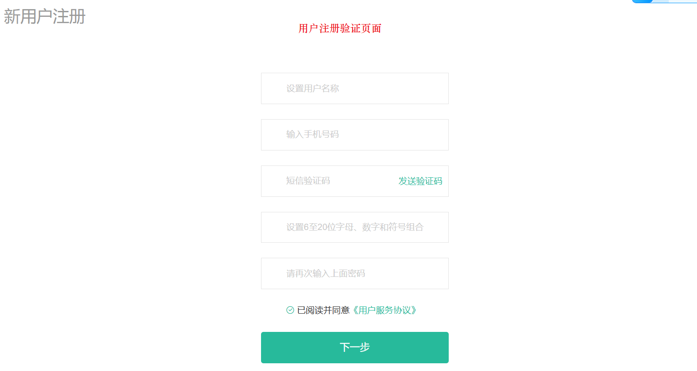
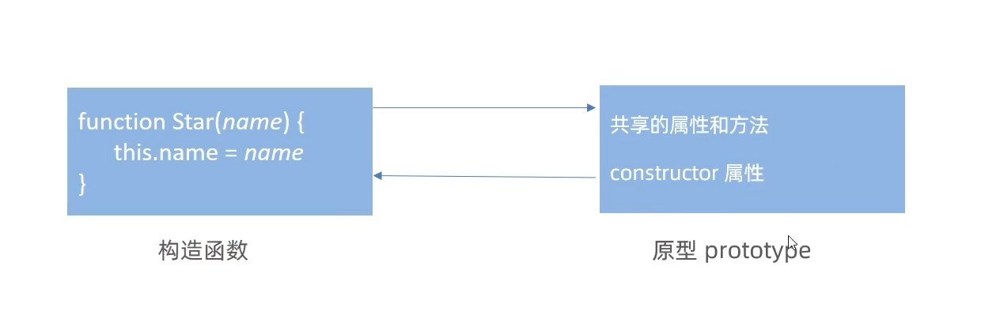
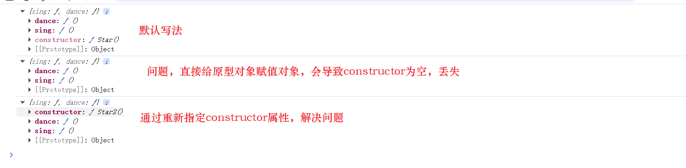
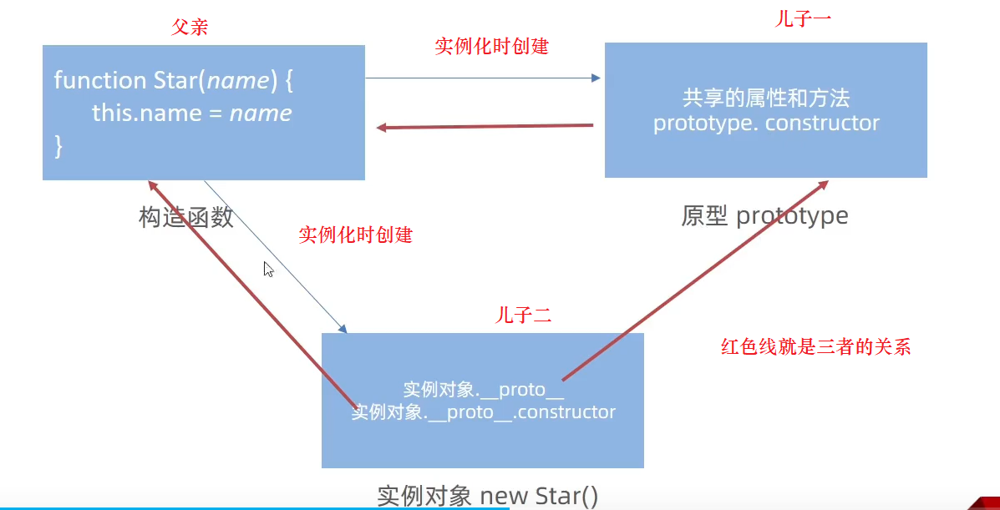
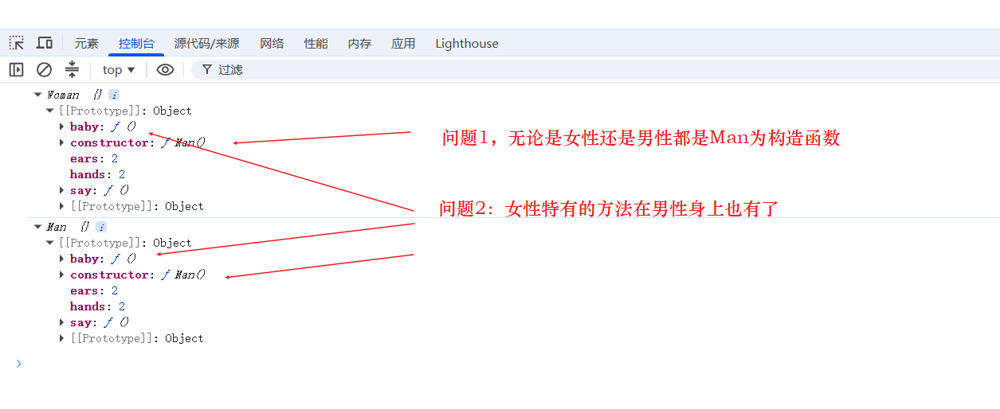
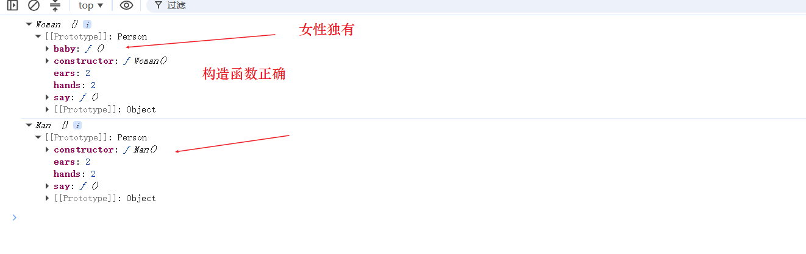
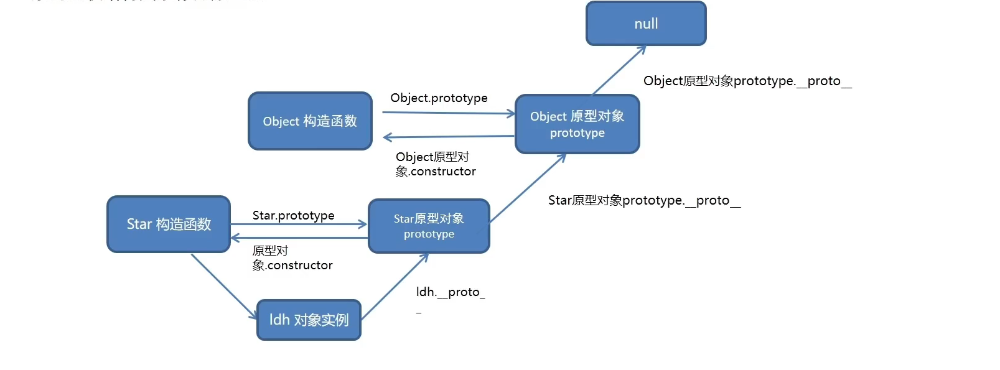

ECMA(European Computer Manufacturers Association)称为欧洲计算机制造商协会，这个组织的目标是评估、开发和认可电信与计算机标准。1994年后该组织改名为Ecma国际。
ES全称EcmaScript，是脚本语言的规范，而平时经常编写的JavaScript是EcmaScript的一种实现，所以ES新特性其实指的是JavaScript的新特性。
EcmaScript是由Ecma国际通过ECMA-262标准化的脚本程序设计语言。Ecma制作过很多标准，ECMA-262标准只是其中一个。
ECMA-262标准是由TC39组织维护的，该组织的会员都是公司，主要是浏览器厂商，例如苹果、谷歌、微软、因特尔等。它们会定期召开会议，会议由会员公司代表和特邀专家出席。
ES各版本历史简要：
| 版本 | 年份 | 版本内容 |
|---|---|---|
| ES1 | 1997 | 制定了语言的基本语法 |
| ES2 | 1998 | 较小改动 |
| ES3 | 1999 | 引入正则、异常处理、格式化输出等。IE开始支持 |
| ES4 | 2007 | 改动过于激进，未发布 |
| ES5 | 2009 | 引入严格模式、JSON、扩展对象、数组、原型、字符串、日期方法 |
| ES6 | 2015 | 模块化、面向对象语法、Promise、箭头函数、let、const、数组解构赋值等内容，内容增加很多 |
| ES7 | 2016 | 幂运算符、数组扩展、Async/await关键字 |
| ES8 | 2017 | Async/await、字符串扩展 |
| ES9 | 2018 | 对象解构赋值、正则扩展 |
| ES10 | 2019 | 扩展对象、数组方法 |
| ES11 | 2020 | 往后每年都会发布一个新版本 |
ES5的基础语法就是js的语法，js基础中已经学习过了，这里对其内容进行补充，涉及许多js高级语法与原理。例如：原型、正则等内容。
正则表达式(Regular Expression)是用于匹配字符串中字符组合的模式。
正则表达式通常用来查找、替换、提取那些符合正则表达式的文本，许多语言都支持正则表达式，例如 java,c++，js等。
正则表达式的使用场景：
例如表单验证(查找匹配)，用户名只能输入英文字母、数字或者下划线。匹配用户名：/^[a-z0-9_-]{3,6}$/；
用于过滤掉页面内容中的一些敏感词(替换)；
从字符串中获取想要的特定部分(提取)等。
正则表达式分为两步：
定义规则，定义正则表达式的语法为：const 变量名=/表达式/；其中//就是正则表达式的字面量;
查找，验证是否符合规则。test()方法用来查看正则表达式与指定字符串是否匹配，是就返回true，不是就返回false。exec()方法，用于在一个指定字符串中执行一个搜索匹配。匹配成功就返回数组，其中包含第一个匹配字符串的位置索引，失败返回null。
xconst str = "你好，杀杀杀，学习前端吗，前端顶顶顶，杀杀杀";
//定义规则，查找前端这个字符串let reg = /前端/;//test()let result = reg.test(str);console.log(result); //trueconsole.log(reg.exec(str)); //匹配成功返回数组 ['前端', index: 9, input: '你好，杀杀杀，学习前端吗，前端顶顶顶，杀杀杀', groups: undefined]reg = /abc/;result = reg.test(str);console.log(result); //false 没有abc这个字符串console.log(reg.exec(str)); //null除了字面量写法外，还可以使用构造函数RegExp创建正则对象。
xxxxxxxxxx//字面量写法var str = "mjjss";var p = /mjj/g;
if (p.test(str)) { console.log("匹配成功"); //匹配成功} else { console.log("匹配失败");}
//构造函数写法var p1 = new RegExp("mjj", "g");console.log(p1.test(str)); //true正则中的字符分为两大类：
普通字符：普通字符就是字符本身，它仅能够描述它们本身，普通字符只能匹配字符串中与它们相同的字符。例如所有的字母或数字。
元字符：又叫特殊字符是一些具有特殊含义的字符，可以极大提高代码的灵活性与匹配功能。例如：规定用户只能输入英文26个字母，使用普通字符必须写abcdefg...把26个字母写完，换成元字符就是[a-z]。
正则测试工具在线网址：https://tool.oschina.net/regex和https://regexr.com/
元字符主要分为三大类：
边界符(表示位置，开头和结尾，必须用什么开头，用什么结尾)
量词(表示重复次数)
字符类(比如\d就表示0~9)
边界符用来提示字符所处的位置，主要有两个字符^表示匹配行首的文本，也就是以什么开始。$表示匹配行尾的文本，也就是以什么结束。
xxxxxxxxxx//表示有哈就匹配成功console.log(/哈/.test("哈")); //trueconsole.log(/哈/.test("哈哈")); //trueconsole.log(/哈/.test("二哈")); //trueconsole.log(/哈/.test("二哈二")); //true
console.log("----------------------------------");//使用行首边界符，表示必须以哈开头才能匹配成功console.log(/^哈/.test("哈")); //trueconsole.log(/^哈/.test("哈哈")); //trueconsole.log(/^哈/.test("二哈")); //falseconsole.log(/^哈/.test("二哈二")); //false
console.log("----------------------------------");//使用行尾边界符，表示必须以哈结尾才能匹配成功console.log(/哈$/.test("哈")); //trueconsole.log(/哈$/.test("哈哈")); //trueconsole.log(/哈$/.test("二哈")); //trueconsole.log(/哈$/.test("二哈二")); //false
console.log("----------------------------------");//同时使用行首行尾边界符，表示精确匹配,就是必须与规则内部一模一样才匹配，必须只有一个哈console.log(/^哈$/.test("哈")); //trueconsole.log(/^哈$/.test("哈哈")); //false 注意是falseconsole.log(/^哈$/.test("二哈")); //falseconsole.log(/^哈$/.test("二哈二")); //false^与$同时使用表示精确匹配，精确匹配表示字符串与规则内部一模一样才匹配成功。
量词用来设定某个模式出现的次数。
| 量词 | 说明 |
|---|---|
* | 重复零次或更多次 |
+ | 重复一次或更多次 |
？ | 重复零次或一次 |
{n} | 重复n次 |
{n,} | 重复n次或更多次 |
{n,m} | 重复n次到m次 |
xxxxxxxxxx//1.出现0次到多次哈，*大于等于0console.log(/^哈*$/.test("哈")); //trueconsole.log(/^哈*$/.test("")); //trueconsole.log(/^哈*$/.test("哈哈")); //trueconsole.log(/^哈*$/.test("哈哈哈")); //trueconsole.log(/^哈*$/.test("二哈哈")); //false 因为是精确匹配,里面只能有哈，不能出现其他字符.console.log(/^哈*$/.test("哈哈二")); //falseconsole.log(/^哈*$/.test("a哈二")); //falseconsole.log("------------------------------");
//2.出现1次到多次哈，+大于等于0console.log(/^哈+$/.test("哈")); //trueconsole.log(/^哈+$/.test("")); //falseconsole.log(/^哈+$/.test("哈哈")); //trueconsole.log(/^哈+$/.test("哈哈哈")); //trueconsole.log(/^哈+$/.test("二哈哈")); //false 因为是精确匹配,里面只能有哈，不能出现其他字符.console.log(/^哈+$/.test("哈哈二")); //falseconsole.log(/^哈+$/.test("a哈二")); //falseconsole.log("------------------------------");
//3.出现0次与1哈，?大于等于0小于等于1console.log(/^哈?$/.test("哈")); //trueconsole.log(/^哈?$/.test("")); //trueconsole.log(/^哈?$/.test("哈哈")); //flaseconsole.log(/^哈?$/.test("哈哈哈")); //falseconsole.log(/^哈?$/.test("二哈哈")); //false 因为是精确匹配,里面只能有哈，不能出现其他字符.console.log(/^哈?$/.test("哈哈二")); //falseconsole.log(/^哈?$/.test("a哈二")); //falseconsole.log("------------------------------");
//4.出现n次哈，{n}写几次就必须出现几次 nconsole.log(/^哈{4}$/.test("哈")); //falseconsole.log(/^哈{4}$/.test("")); //fasleconsole.log(/^哈{4}$/.test("哈哈")); //fasleconsole.log(/^哈{4}$/.test("哈哈哈哈")); //trueconsole.log(/^哈{4}$/.test("哈哈哈哈哈哈")); //falseconsole.log(/^哈{4}$/.test("哈哈哈哈ss")); //fasleconsole.log("------------------------------");
//5.出现n+次哈，{n,}写几次就必须大于等于几次 >=nconsole.log(/^哈{4,}$/.test("哈")); //falseconsole.log(/^哈{4,}$/.test("")); //fasleconsole.log(/^哈{4,}$/.test("哈哈")); //fasleconsole.log(/^哈{4,}$/.test("哈哈哈哈")); //trueconsole.log(/^哈{4,}$/.test("哈哈哈哈哈哈")); //trueconsole.log(/^哈{4,}$/.test("哈哈哈哈ss")); //fasleconsole.log("------------------------------");
//6.，{n,m}必须出现n次到m次之间 n~m，逗号左右两侧千万不能有空格，否则会出错console.log(/^哈{4,6}$/.test("哈")); //falseconsole.log(/^哈{4,6}$/.test("")); //fasleconsole.log(/^哈{4,6}$/.test("哈哈")); //fasleconsole.log(/^哈{4,6}$/.test("哈哈哈哈")); //trueconsole.log(/^哈{4,6}$/.test("哈哈哈哈哈哈")); //trueconsole.log(/^哈{4,6}$/.test("哈哈哈哈ss")); //fasleconsole.log("------------------------------");console.log(/^哈{4, 6}$/.test("哈哈哈哈哈哈")); //false 有空格会出错(1)匹配字符集合[],[abc]表示后面的字符串只要包含abc中的任意一个字符，就返回true。
xxxxxxxxxxconsole.log(/[abc]/.test("andy")); //trueconsole.log(/[abc]/.test("baby")); //trueconsole.log(/[abc]/.test("cry")); //trueconsole.log(/[abc]/.test("die")); //false
console.log(/^[abc]$/.test("andy")); //false 精确匹配只能匹配一个字符console.log(/^[abc]$/.test("a")); //trueconsole.log(/^[abc]$/.test("b")); //trueconsole.log(/^[abc]$/.test("c")); //trueconsole.log(/^[abc]$/.test("abc")); //false
console.log(/^[abc]{3}$/.test("abc")); //true，使用量词可以精确匹配多个
console.log(/^[mM][jJ]+$/.test("mjj")); //true，使用量词可以精确匹配多个console.log(/^[mM][jJ]+$/.test("mJj")); //true，console.log(/^[mM][jJ]+$/.test("MjJJJ")); //true，console.log(/^[mM][jJ]+$/.test("MmjJJJ")); //falseconsole.log(/^[mM][jJ]+$/.test("MjJJJy")); //falseconsole.log(/^[mM][jJ]+y?$/.test("MjJJJy")); //trueconsole.log(/^[mM][jJ]+y?$/.test("MjJJJy~~~~~~~&&")); //falseconsole.log(/^[mM][jJ]+y?[~~~&&\.!]*$/.test("MjJJJy~~~~~~~&&")); //true[a-z]是指26的小写字母任意匹配一个。[A-Z]是指26的大写字母任意匹配一个。[0-9]是指0到9任意数字匹配。
[a-zA-Z0-9]是指除了特殊字符外，所有字母数字都匹配。[\u4e00-\u9fa5]匹配所有中文字符,利用中文的Unicode码。
xxxxxxxxxxconsole.log(/^[a-z]$/.test("p")); //trueconsole.log(/^[a-z]$/.test("P")); //falseconsole.log(/^[A-Z]$/.test("P")); //trueconsole.log(/^[A-Z]$/.test("p")); //false
console.log(/^[a-zA-Z0-9]$/.test("p")); //trueconsole.log(/^[a-zA-Z0-9]$/.test("P")); //trueconsole.log(/^[a-zA-Z0-9]$/.test("7")); //true 只能出现英文字母与数字console.log(/^[a-zA-Z0-9_]$/.test("_")); //true 只能出现英文字母、数字以及下划线
//腾讯QQ号 QQ号必须从10000开始，首位不能为0console.log(/^[1-9][0-9]{4,}$/.test("222222")); //trueconsole.log(/[\u4e00-\u9fa5]/.test("张三")); //true[]中可以加上^符号，表示匹配除中括号中以外的部分，也就是取反操作。[^a-z]表示匹配除小写字母以外的字符。
xxxxxxxxxxconsole.log(/^[^a-z]$/.test("p")); //falseconsole.log(/^[^a-z]$/.test("P")); //trueconsole.log(/^[^A-Z]$/.test("P")); //falseconsole.log(/^[^A-Z]$/.test("p")); //true(2).匹配除了换行符外的任何单个字符。
xxxxxxxxxxconsole.log(/^.$/.test("p")); //trueconsole.log(/^.$/.test("P")); //trueconsole.log(/^.$/.test("@")); //trueconsole.log(/./.test("\n")); //false 匹配除换行符外的所有字符console.log(/^.{2}$/.test(`\n`)); //false 匹配除换行符外的所有字符
console.log(/^.$/.test("/n")); //false 匹配所有字符单个字符 /n是两个字符//特殊字符，担心出错可以使用转义字符console.log(/^[!*\.%\^\+\~\-#@\$]+$/g.test("..+^~$@")); //true案例：验证用户名，用户名长度为6~16位，必须由英文字母、数字、下划线或者短横线组成
xxxxxxxxxx<html lang="en"> <head> <meta charset="UTF-8" /> <meta name="viewport" content="width=device-width, initial-scale=1.0" /> <title>Document</title> <style> span { display: inline-block; width: 250px; height: 30px; vertical-align: middle; line-height: 30px; padding-left: 15px; } .error { color: red; background: url("./images/error1.png") no-repeat left center; }
.right { color: green; background: url("./images/right.png") no-repeat left center; } </style> </head> <body> <input type="text" /> <span></span> <script> //准备正则 const reg = /^[a-zA-Z0-9-_]{6,16}$/; const input = document.querySelector("input"); const span = input.nextElementSibling;
input.addEventListener("blur", function () { //正则检测 if (reg.test(this.value)) { span.innerHTML = "输入正确"; span.className = "right"; } else { span.innerHTML = "请输入6~16位的英文数字下划线"; span.className = "error"; } }); </script> </body></html>(3)预定义：是指某些常见模式的简写方式，就是预定义好的字符集。
| 预定义类 | 说明 |
|---|---|
\d | 匹配0-9之间的任一数字，相当于[0-9] |
\D | 匹配0-9以外的字符，相当于[^0-9] |
\w | 匹配任意的字母、数字和下划线，相当于[a-zA-Z0-9_] |
\W | 除所有字母、数字和下划线以外的字符，相当于[^a-zA-Z0-9_] |
\s | 匹配空格(包括换行符、制表符、空格符等），相当于[\t\r\n\v\f] |
\S | 匹配非空格的字符，相当于[^\t\r\n\v\f] |
xxxxxxxxxx//日期匹配console.log(/^\d{4}-\d{2}-\d{2}/.test("p111")); //falseconsole.log(/^\d{4}-\d{2}-\d{2}/.test("2012-04-08")); //true修饰符用于约束正则执行的某些细节行为，例如:是否区分大小写(i是ignore缩写)、是否全局匹配(g是global缩写),表示匹配所有满足正则表达式的结果、是否支持多行匹配(m)、等;
xxxxxxxxxx//i表示不区分大小写console.log(/^java$/.test("java")); //trueconsole.log(/^java$/.test("JAVA")); //falseconsole.log(/^java$/i.test("java")); //trueconsole.log(/^java$/i.test("JAVA")); //trueconsole.log(/^java$/i.test("Java")); //true
//g表示全局匹配,使用字符串的replace方法进行字符串替换
const str = "java是一门好的语言，学好Java工资很高";
const r1 = str.replace(/java/i, "js");console.log(r1); //js是一门好的语言，学好Java工资很高 结果只替换了一个
const r2 = str.replace(/java/gi, "js");console.log(r2); //js是一门好的语言，学好js工资很高 结果是全部进行替换
const r3 = str.replace(/^java$/ig, "js");console.log(r3); //java是一门好的语言，学好Java工资很高 精确匹配是无法成功的
const r4 = str.replace(/java|Java/g, "js");console.log(r4); //js是一门好的语言，学好js工资很高 |表示或运算，就是满足任何一个就进行替换案例:过滤敏感词
xxxxxxxxxx<html lang="en"> <head> <meta charset="UTF-8" /> <meta name="viewport" content="width=device-width, initial-scale=1.0" /> <title>Document</title> </head> <body> <textarea name="" id="" clos="30" row="10"></textarea> <button>发布</button> <div></div> <script> const tx = document.querySelector("textarea"); const btn = document.querySelector("button"); const div = document.querySelector("div");
btn.addEventListener("click", function () { div.innerHTML = tx.value.replace(/激情|基情|爆炸/g, "**"); tx.value = ""; }); </script> </body></html>
//执行结果你好。爆炸，你很基情，也会激情的人。变为：你好。**，你很**，也会**的人。分组匹配可以使用()对匹配进行分组。一个括号就表示匹配一组。可使用RegExp对象获取每组单独的值。
xxxxxxxxxx//1.最简单的分组const str = "2023-02-17";const regex = /(\d{4})-(\d{2})-(\d{2})/;//使用中括号是没有分组效果的//const regex = /[\d{4}]-[\d{2}]-[\d{2}]/;regex.exec(str); //必须使用exec或test函数执行后，才会有分组值//使用RegExp对象获取每组的值，$1表示第一组console.log(RegExp.$1); // 输出 "2023"console.log(RegExp.$2); // 输出 "02"console.log(RegExp.$3); // 输出 "17"
//2.新方式分组写法const match = regex.exec(str);if (match) { console.log(match[1]); // 输出 "2023" console.log(match[2]); // 输出 "02" console.log(match[3]); // 输出 "17"}
//3.使用repalce方法进行替换 替换字符串中可使用分组$获取分组内容const text = "Hello, my name is John Doe.";const regex2 = /name is (\w+) (\w+)/;const replacedText = text.replace(regex2, "full name is $2 $1");console.log(replacedText); // 输出 "Hello, my full name is Doe John."
//4. 使用循环匹配全部，要使用g模式const str3 = "Hello World! Hello Universe!";const regex3 = /Hello (\w+)/g;while (regex3.exec(str3)) { console.log(RegExp.$1); // 输出 "World" 和 "Universe"}
//5. 匹配复杂字符串const regex4 = /(http|https):\/{2}w{3}\.(baidu|sss|google|ddd)\.(com|cn)/g;const str4 = `http://www.baidu.com/ https://www.sss.com/http://www.google.com/https://www.ddd.cn/`;//不一定非要使用exec，使用test效果也是一样的while (regex4.test(str4)) { console.log(RegExp.$2); // 输出 "baidu" "sss" "google" "ddd"}可不捕获分组，使用符号?:在括号中
xxxxxxxxxx//不捕获分组?:const str = "2023-02-17";const regex = /(?:\d{4})-(\d{2})-(\d{2})/;regex.exec(str); //必须使用exec或test函数执行后，才会有分组值//使用RegExp对象获取每组的值，$1表示第一组，使用不捕获后就变成实际的第二组console.log(RegExp.$1); // 输出 "02"console.log(RegExp.$2); // 输出 "17"console.log(RegExp.$3); // 输出 ""ES9新增了命名捕获分组?<变量名>，就是给分组捕获结果命名，并放到groups属性中。
xxxxxxxxxxlet str = '<a href="http://www.baidu.com">百度</a>';
//提取url与标签文本 使用分组但不捕获的方式const reg = /<a href="(.*)">(.*)<\/a>/;
//执行const result = reg.exec(str);console.log(result[1]); //http://www.baidu.comconsole.log(result[2]); //百度
//使用分组捕获,groups中就有数据const reg1 = /<a href="(?<url>.*)">(?<text>.*)<\/a>/;const result2 = reg1.exec(str);
console.log(result2.groups.url); //http://www.baidu.comconsole.log(result2.groups.text); //百度所谓正向预查又叫正向断言，就是只匹配规则，但实际结果不捕获规则内容。
正向预查分为正向肯定预查使用符号(?=规则)和正向否定预查(?!规则)。
xxxxxxxxxx//不使用正向预查const reg = /\d+元/g;const str = "201元 2002元 203刀 204磅";let match;do { match = reg.exec(str); console.log(match); //匹配的结果为201元 2002元} while (match);
//使用正向预查 就是只匹配数字，不匹配元字,但元依然属于规则中const reg1 = /\d+(?=元)/g;const str1 = "201元 2002元 203刀 204磅";let match1;do { match1 = reg1.exec(str1); console.log(match1); //匹配的结果为201 2002} while (match1);
//使用正向否定预查，就是不是元结尾,但数字没考虑进去const reg2 = /\d+(?!元)/g;const str2 = "201元 2002元 203刀 204磅";let match2;do { match2 = reg2.exec(str2); console.log(match2); //匹配的结果为20 200 203 204} while (match2);
//使用正向否定预查,排除数字的情况const reg3 = /\d+(?!元|\d)/g;const str3 = "201元 2002元 203刀 204磅";let match3;do { match3 = reg3.exec(str3); console.log(match3); //匹配的结果为203 204} while (match3);所谓反向预查又叫反向断言，就是只匹配规则，但实际结果不捕获规则内容。
反向预查分为反向肯定预查使用符号(?<=规则)和反向否定预查(?<!规则)。
xxxxxxxxxx//不使用反向预查const reg = /￥\d+/g;const str = "￥201 ￥2002 $203 @204";let match;do { match = reg.exec(str); console.log(match); //匹配的结果为￥201 ￥2002} while (match);
//使用反向预查 就是只匹配数字，不匹配￥字,但￥依然属于规则中const reg1 = /(?<=￥)\d+/g;do { match = reg1.exec(str); console.log(match); //匹配的结果为201 2002} while (match);
//使用反向否定预查，就是不是￥字开头,但数字没考虑进去const reg2 = /(?<!￥)\d+/g;do { match = reg2.exec(str); console.log(match); //匹配的结果为01 002 203 204} while (match);
//使用反向否定预查,排除数字的情况const reg3 = /(?<!￥|\d)\d+/g;do { match = reg3.exec(str); console.log(match); //匹配的结果为203 204} while (match);.在正则中表示处换行符外的任意字符,它叫dot。dotAll模式就是后面加了s模式，有了该模式.就可以匹配任意字符。这样.就可直接匹配一长串空格或者换行字符,html标签匹配就更容易。
xxxxxxxxxxlet str = `<ul> <li> <a>张三</a> <p>上游时间：1100-01-12</p> </li> <li> <a>阿甘正传</a> <p>上游时间：1630-01-12</p> </li> </ul>`;//1.没有dotAll模式的情况const reg = /<li>\s+<a>(.*?)<\/a>\s+<p>(.*?)<\/p>/;
//执行const result = reg.exec(str);console.log(result); //Array3,只匹配一个li的内容
//2.有dotAll模式的情况const reg1 = /<li>.*?<a>(.*?)<\/a>.*?<p>(.*?)<\/p>/s;const result1 = reg1.exec(str);console.log(result1); //Array3,只匹配一个li的内容
//3.有dotAll模式的情况 全局匹配const reg2 = /<li>.*?<a>(.*?)<\/a>.*?<p>(.*?)<\/p>/gs;let result2;let data = [];while ((result2 = reg2.exec(str))) { data.push({ title: result2[1], time: result2[2] });}console.log(data); //[{title: '张三', time: '上游时间：1100-01-12'},{title: '阿甘正传', time: '上游时间：1630-01-12'}]正则的方法：
test()方法，返回一个布尔值，表示当前模式是否能匹配参数字符串。
exec()方法，返回匹配的结果，如果发现匹配，就返回一个数组，数组中的成员都是匹配的子字符串，否则返回null。
xxxxxxxxxx//testvar str = "hello world";console.log(/world$/g.test(str)); //trueconsole.log(/wod$/g.test(str)); //false
//execconsole.log(/world$/g.exec(str)); //['world', index: 6, input: 'hello world', groups: undefined]console.log(/wod$/g.exec(str)); //null除了正则的方法外，string字符串也有方法可以使用正则表达式。
match()方法，对字符串进行正则匹配，返回匹配的结果。
search()方法,返回第一个满足条件的匹配结果在整个字符串中的位置，如果没有匹配就返回-1。跟exec很像。
replace()方法，可以替换匹配的值，它接受两个参数，第一个是正则表达式，表示搜索模式，第二个是替换的内容。
xxxxxxxxxxvar str = "hello world";var reg = /l/g;var reg2 = /oo/g;//matchconsole.log(str.match(reg)); // ['l', 'l', 'l'] 返回的是所有的匹配结果console.log(str.match(reg2)); //null
//searchconsole.log(str.search(reg)); // 2 2是第一个l出现的索引位置console.log(str.search(reg2)); //-1
//replaceconsole.log(str.replace(reg, "**")); // he****o wor**dconsole.log(str.replace(reg2, "**")); //hello world
var timestr = "2019.02.20";//.必须转义，否则表示所有字符都匹配console.log(timestr.replace(/./, "-")); //-019.02.20console.log(timestr.replace(/\./g, "-")); //2019-02-20xxxxxxxxxx//1. 检查用户账号//验证规则：由字母，数字，下划线组成，以字母开头 4-16位function checkUser(str) { var re = /^[a-zA-Z]\w{3,15}$/g; if (re.test(str)) { return "账号匹配成功"; } else { return "账号匹配失败"; }}
console.log(checkUser("h12h1h_dddd")); //账号匹配成功console.log(checkUser("h12")); //账号匹配失败console.log(checkUser("_h12sss")); //账号匹配失败
//2. 匹配手机号//验证规则：11位，以1开头，3 5 7 8function checkMobile(str) { var re = /^1[3|5|7|8]\d{9}$/g; if (re.test(str)) { return "手机号匹配成功"; } else { return "手机号匹配失败"; }}
console.log(checkMobile("13333909900")); //手机号匹配成功console.log(checkMobile("03333909900")); //手机号匹配失败console.log(checkMobile("133300")); //手机号匹配失败
//3. 匹配电话号//验证规则：区号+号码 01088888888 010-8888888 0934-7777777function checkPhone(str) { var re = /^0\d{2,3}-?\d{7,8}$/g; if (re.test(str)) { return "电话号匹配成功"; } else { return "电话号匹配失败"; }}
console.log(checkPhone("010-8888888")); //电话号匹配成功console.log(checkPhone("010-88888888888")); //电话号匹配失败console.log(checkPhone("0934-77")); //电话号匹配失败
//4. 匹配身份证//验证规则：18位或者15位，15位全是数字 18位前17位是数字最后一位校验位可能是数字也可能是x或Xfunction checkCard(str) { var re = /^(\d{15}$)|(^\d{17}(\d|X|x)$)/g; if (re.test(str)) { return "身份证匹配成功"; } else { return "身份证匹配失败"; }}
console.log(checkCard("520251111135647")); //身份证匹配成功console.log(checkCard("52025111113564700X")); //身份证匹配成功console.log(checkCard("520251111135647001")); //身份证匹配成功console.log(checkCard("52025111647001")); //身份证匹配失败console.log(checkCard("520251111135647001111")); //身份证匹配失败
//5. 匹配邮箱//验证规则：第一部分@第二部分.com|cn|netfunction checkEmail(str) { var re = /^[a-zA-Z0-9-._]+[@][[a-zA-Z0-9-._]+\.(com|cn|net)/g; if (re.test(str)) { return "邮箱匹配成功"; } else { return "邮箱匹配失败"; }}
console.log(checkEmail("294@qq.com")); //邮箱匹配成功console.log(checkEmail("294qq.com")); //邮箱匹配失败console.log(checkEmail("294@qq.sss")); //邮箱匹配失败实际开发中使用正则验证的案例。参考上边的简单案例进行开发。

基本页面register.html
xxxxxxxxxx<html lang="en"> <head> <meta charset="UTF-8" /> <title>小兔鲜儿 - 新鲜 惠民 快捷!</title> <meta http-equiv="X-UA-Compatible" content="IE=edge" /> <meta name="renderer" content="webkit" /> <link rel="stylesheet" href="./css/common.css" /> <link rel="stylesheet" href="./css/register.css" /> <link rel="stylesheet" href="https://at.alicdn.com/t/font_2143783_iq6z4ey5vu.css" /> </head> <body> <div class="xtx-wrapper"> <div class="container"> <!-- 卡片 --> <div class="xtx-card"> <h3>新用户注册</h3> <form class="xtx-form"> <div data-prop="username" class="xtx-form-item"> <span class="iconfont icon-zhanghao"></span> <input name="username" type="text" placeholder="设置用户名称" /> <span class="msg"></span> </div> <div data-prop="phone" class="xtx-form-item"> <span class="iconfont icon-shouji"></span> <input name="phone" type="text" placeholder="输入手机号码 " /> <span class="msg"></span> </div> <div data-prop="code" class="xtx-form-item"> <span class="iconfont icon-zhibiaozhushibiaozhu"></span> <input name="code" type="text" placeholder="短信验证码" /> <span class="msg"></span> <a class="code" href="javascript:;">发送验证码</a> </div> <div data-prop="password" class="xtx-form-item"> <span class="iconfont icon-suo"></span> <input name="password" type="password" placeholder="设置6至20位字母、数字和符号组合" /> <span class="msg"></span> </div> <div data-prop="confirm" class="xtx-form-item"> <span class="iconfont icon-suo"></span> <input name="confirm" type="password" placeholder="请再次输入上面密码" /> <span class="msg"></span> </div> <div class="xtx-form-item pl50"> <i class="iconfont icon-queren"></i> 已阅读并同意<i>《用户服务协议》</i> </div> <div class="xtx-form-item"> <button class="submit">下一步</button> <!-- <a class="submit" href="javascript:;">下一步</a> --> </div> </form> </div> </div> </div> </body></html>register.css样式，公共样式common.css内容是统一的就不多说了
xxxxxxxxxx.xtx-wrapper { background: #f5f5f5; line-height: 1.4;}
.xtx-wrapper .container { width: 1240px; margin: 0 auto; padding: 50px 0;}
.xtx-card { width: 100%; height: 800px; background: #fff;}
.xtx-card h3 { font-size: 26px; font-weight: normal; color: #999999; padding-left: 50px; height: 180px; line-height: 180px;}
.xtx-form { padding-left: 460px;}
.xtx-form .xtx-form-item { position: relative; padding-bottom: 24px;}
.xtx-form .xtx-form-item .msg { color: #ff4d4f; position: absolute; left: 2px; bottom: 2px;}
.xtx-form .xtx-form-item.pl50 { padding-left: 40px; cursor: pointer;}
.xtx-form .xtx-form-item span.iconfont { position: absolute; left: 15px; top: 13px; color: #666; font-size: 18px;}
.xtx-form .xtx-form-item i { color: #27BA9B; font-size: 14px;}
.xtx-form .xtx-form-item input { width: 300px; height: 50px; border: 1px solid #e4e4e4; padding-left: 40px;}
.xtx-form .xtx-form-item.error input { border-color: #ff4d4f;}
.xtx-form .xtx-form-item input::placeholder { color: #cccccc !important;}
.xtx-form .xtx-form-item .submit { width: 300px; height: 50px; background: #27BA9B; border-radius: 4px; display: block; font-size: 16px; color: #fff; text-align: center; line-height: 50px; cursor: pointer;}
.xtx-form .xtx-form-item .code { position: absolute; left: 190px; top: 16px; width: 100px; color: #27BA9B; text-align: right;}
.xtx-form .xtx-form-item .code.ing { color: #cccccc;}
.xtx-steps { display: flex; justify-content: space-between; width: 720px; height: 96px; margin: 0 auto;}
.xtx-steps .item { position: relative; width: 48px; height: 48px;}
.xtx-steps .item .text { text-align: center; width: 120px; position: absolute; left: 50%; transform: translateX(-50%); top: 63px; color: #999;}
.xtx-steps .item .step { border: 2px solid #e4e4e4; color: #ccc; background: #fff; border-radius: 50%; line-height: 46px; text-align: center; font-size: 28px; z-index: 999; display: block; position: relative;}
.xtx-steps .item::after, .xtx-steps .item::before { content: ""; position: absolute; top: 23px; left: 24px; height: 2px; background: #e4e4e4; width: 120px;}
.xtx-steps .item::after { transform: translateX(-100%);}
.xtx-steps .item:first-child::after { display: none;}
.xtx-steps .item:last-child::before { display: none;}
.xtx-steps .item.active .text { color: #27BA9B;}
.xtx-steps .item.active .step { background: #27BA9B; color: #fff; border-color: #27BA9B;}
.xtx-steps .item.active::after, .xtx-steps .item.active::before { content: ""; background: #27BA9B;}
.xtx-form-label { padding-left: 360px; margin-top: 80px;}
.xtx-form-label .xtx-form-item { position: relative; padding-bottom: 24px; display: flex;}
.xtx-form-label .xtx-form-item label { width: 100px; padding-right: 15px; text-align: right; font-size: 16px; height: 50px; line-height: 50px; color: #999;}
.xtx-form-label .xtx-form-item input { width: 300px; height: 50px; border: 1px solid #e4e4e4; padding-left: 10px;}
.xtx-form-label .xtx-form-item input::placeholder { color: #cccccc !important;}
.xtx-form-label .xtx-form-item input:read-only { background: #f5f5f5; color: #999;}
.xtx-form-label .xtx-form-item .submit { width: 300px; height: 50px; background: #27BA9B; border-radius: 4px; display: block; font-size: 16px; color: #fff; text-align: center; line-height: 50px;}
.xtx-form-label .xtx-form-item .captcha { line-height: 50px; height: 50px;}
.xtx-form-label .xtx-form-item .captcha img { width: 134px; height: 50px;}
.xtx-form-label .xtx-form-item .captcha a { color: #27BA9B;}
.xtx-form-label .xtx-form-item .code { position: absolute; left: 310px; top: 16px; color: #27BA9B;}
.xtx-form-label .xtx-form-item .code.ing { color: #cccccc;}
.xtx-success-box { padding-top: 250px; text-align: center; color: #999999;}
.xtx-success-box .iconfont { font-size: 80px; color: #1DC779;}
.xtx-success-box .tit { font-size: 20px; padding: 20px 0;}
.xtx-success-box .desc { font-size: 16px; padding-bottom: 20px;}
.xtx-success-box .btn { width: 300px; height: 50px; background: #27BA9B; border-radius: 4px; display: block; font-size: 16px; color: #fff; text-align: center; line-height: 50px; margin: 0 auto;}验证代码register.js
xxxxxxxxxx//使用立即执行函数防止命名重复(function () { //0.发送短信验证码模块功能 const code = document.querySelector(".code"); let flag = true; //节流阀 code.addEventListener("click", function () { if (flag) { flag = false; let i = 5; code.innerHTML = `0${i}秒后重新获取`; let timerId = setInterval(function () { i--; code.innerHTML = `0${i}秒后重新获取`; if (i === 0) { clearInterval(timerId); code.innerHTML = `重新获取`; flag = true; } }, 1000); } });})();//验证模块(function () { //1.用户名验证，使用change事件，blur事件是光标移开就会触发，change事件是input内容变化时才会触发 //正则：/^[a-zA-Z0-9-_]{6,10}$/ const username = document.querySelector("[name=username]"); username.addEventListener("change", verifyName); //正则验证函数，验证内容都封装为外部函数 function verifyName() { const span = username.nextElementSibling; const reg = /^[a-zA-Z0-9-_]{6,10}$/; if (!reg.test(username.value)) { //验证失败 span.innerText = "输入不合法，请输入6~10位"; return false; } //验证成功就清空错误信息 span.innerText = ""; return true; }
//2.手机号验证，使用change事件，blur事件是光标移开就会触发，change事件是input内容变化时才会触发 //正则：/^1(3\d|4[5-9]|5[0-35-9]|6[567]|7[0-8]|8\d|9[0-35-9])\d{8}$/ const phone = document.querySelector("[name=phone]"); phone.addEventListener("change", verifyPhone); //正则验证函数，验证内容都封装为外部函数 function verifyPhone() { const span = phone.nextElementSibling; const reg = /^1(3\d|4[5-9]|5[0-35-9]|6[567]|7[0-8]|8\d|9[0-35-9])\d{8}$/; if (!reg.test(phone.value)) { //验证失败 span.innerText = "输入不合法，请输入正确的11位手机号码"; return false; } //验证成功就清空错误信息 span.innerText = ""; return true; }
//3.验证码验证，使用change事件，blur事件是光标移开就会触发，change事件是input内容变化时才会触发 //正则：/^\d{6}$/ 6位数字 const code = document.querySelector("[name=code]"); code.addEventListener("change", verifyCode); //正则验证函数，验证内容都封装为外部函数 function verifyCode() { const span = code.nextElementSibling; const reg = /^\d{6}$/; if (!reg.test(code.value)) { //验证失败 span.innerText = "输入不合法，请输入正确的6位验证码"; return false; } //验证成功就清空错误信息 span.innerText = ""; return true; }
//4.密码框验证，使用change事件，blur事件是光标移开就会触发，change事件是input内容变化时才会触发 //正则：/^[a-zA-Z0-9_]{6,20}$/ 6~20位数字字母组合 const password = document.querySelector("[name=password]"); password.addEventListener("change", verifyPassword); //正则验证函数，验证内容都封装为外部函数 function verifyPassword() { const span = password.nextElementSibling; const reg = /^[a-zA-Z0-9_]{6,20}$/; if (!reg.test(password.value)) { //验证失败 span.innerText = "输入不合法，密码是6~20位数字字母组成"; return false; } //验证成功就清空错误信息 span.innerText = ""; return true; }
//5.再次密码框验证，如果本次密码不等于上边输入的密码，就返回错误信息，不需要使用正则验证 const confirm = document.querySelector("[name=confirm]"); confirm.addEventListener("change", verifyConfirm); //正则验证函数，验证内容都封装为外部函数 function verifyConfirm() { const span = confirm.nextElementSibling; if (confirm.value !== password.value) { //验证失败 span.innerText = "两次密码输入不一致"; return false; } //验证成功就清空错误信息 span.innerText = ""; return true; }
//6.已阅读确认验证，我同意模块 const queren = document.querySelector(".icon-queren"); queren.addEventListener("click", function () { //切换类 this.classList.toggle("icon-queren2"); });
//7.提交模块， // 如果没有勾选我同意模块，提示需要勾选。使用classList.contains()看看有没有包含某个类，如果有返回true,没有返回false // 如果上边input表单只要有一个模块验证错误返回的是false，就阻止提交默认行为 const form = document.querySelector("form"); form.addEventListener("submit", function (e) { //如果没有勾选我同意模块 if (!queren.classList.contains("icon-queren2")) { alert("请勾选同意协议"); e.preventDefault(); //阻止提交 } //依次判断上边每个模块，是否通过，只要有一个没有通过就阻止提交， // 这里也解释了为什么之前每个模块都有封装为单独的函数，就是为了这里使用 if (!verifyName()) e.preventDefault(); if (!verifyPhone()) e.preventDefault(); if (!verifyCode()) e.preventDefault(); if (!verifyPassword()) e.preventDefault(); if (!verifyConfirm()) e.preventDefault(); });})();使用构造函数实现封装对象时，我们会发现存在内存浪费的问题。例如：我们只需要每个对象属性不同，但方法可以共用时，会发现每个对象上的方法都是单独存在的，这样就导致内存浪费。
注意:
对象属性只在栈中占用空间，内存不大，因此可以忽略。
对象方法是引用对象，它会在堆中开辟空间，栈上也占空间，空间占用较大，引用对象占用空间不能忽略。
xxxxxxxxxx//浪费内存的问题function Star(uname, age) { this.uname = uname; this.age = age; this.sing = function () { console.log("唱歌"); };}
const ldh = new Star("ldh", 18);const zxy = new Star("张学友", 19);console.log(ldh === zxy); //falseconsole.log(ldh.sing === zxy.sing); //false如果希望所有对象使用同一个函数，节约内存，就可以使用原型来解决。
js中规定，每个构造函数中都有一个prototype属性，指向外部的另外一个对象，这个对象就是原型（prototype），又叫做原型对象。这个对象可以挂在函数，对象实例化不会多次创建原型上的函数，节约内存。
原型主要功能就是实现方法共享，构造函数通过原型分配的方法是所有对象实例都共享的。因此可以把不变的方法直接定义在prototype对象上，这样所有对象的实例就可以共享方法了。当然也可以共享属性。
xxxxxxxxxx//之前的写法function Star(uname, age) { this.uname = uname; this.age = age; this.sing = function () { console.log("唱歌"); };}const ldh = new Star("ldh", 18);const zxy = new Star("张学友", 19);console.log(ldh === zxy); //falseconsole.log(ldh.sing === zxy.sing); //false
//打印原型console.dir(Star.prototype); //类型是object，原型有一个constructor属性，它的值就是构造函数ƒ Star(uname, age)
//原型的写法function Star1(uname, age) { this.uname = uname; this.age = age;}//原型对象添加方法Star1.prototype.sing = function () { console.log("唱歌");};const ldh1 = new Star1("ldh", 18);const zxy1 = new Star1("张学友", 19);
console.log(ldh1 === zxy1); //falseconsole.log(ldh1.sing === zxy1.sing); //true//调用结果是一样的ldh1.prototype.sing(); //完整写法zxy1.sing(); //简写
//原型与静态成员的区别Star1.aaa = function () { console.log("静态成员函数");};Star1.aaa(); //静态成员函数ldh1.aaa(); //静态成员不能使用实例对象调用 报错原型对象的原理：
js创建构造函数时，自动给其添加了一个
prototype属性。该属性指向一个对象。原型指向的对象是引用类型，它是对象实例，因此它会堆中单独开辟了一个空间，
prototype属性存放的是对象地址。有空间后，js还会自动在原型对象实例上添加一个属性
constructor,该属性存放构造函数，它是指向之前构造函数的。当使用原型给构造函数添加方法时，js会在原型对象空间中上添加方法，然后让
prototype.sing属性存放该地址。当构造函数创建实例对象时，它只会开辟空间存放实例化构造函数本身的内容，prototype属性内容是不会变化的。因此不管是哪一个实例对象，它们的prototype属性指向的都是对象一个，当然里面的方法也是同一个。调用时也是同一个。
原型的本质，其实就是在构造函数外部单独放一个对象，然后让构造函数的一个属性固定指向该对象。这种用法跟class的静态方法很像。
原型也很像之前讲的构造函数的静态成员，但两者还是有所不同。
构造函数和原型对象中的this都指向实例化对象。因为它们都是实例化对象调用的。
xxxxxxxxxx//this指向let _this;let _this1;function Star(uname) { _this = this; //保存构造函数this this.uname = uname;}Star.prototype.sing = function () { console.log("唱歌"); _this1 = this; //保存原型中的this};
const zxy = new Star("张学友");console.log(_this === zxy); //true 构造函数的this指向实例对象
zxy.sing(); //通过调用者也可以看出原型this指向zxyconsole.log(_this1 === zxy); //true 原型的this指向实例对象案例：给数组对象扩展求最大值的方法和求和方法，要求所有数组都能用。
xxxxxxxxxxconst arr = [1, 2, 3];// const arr = new Array(1, 2, 3);
//最大值方法Array.prototype.max1 = function (arr) { return Math.max(arr);};console.log(arr.max1(arr)); //3 这种写法太low
//优化最大值方法Array.prototype.max = function () { //this指向实例化对象 return Math.max(this);};
//最小值Array.prototype.min = function () { return Math.min(this);};
//求和Array.prototype.sum = function () { return this.reduce((prev, item) => prev + item, 0);};console.log(arr.max()); //3console.log(arr.min()); //1console.log(arr.sum()); //6每个原型对象里都有一个constructor属性(又叫constructor构造函数）,它是原型对象自带的。
constructor属性的作用是指向该原型对象的构造函数。简单理解：指向我们父亲，我自己又是我父亲的儿子，构造函数是父亲，原型是儿子。

xxxxxxxxxx//constructor 单词翻译就是构造函数function Star() {}const lad = new Star();console.log(Star.prototype); //constructor:ƒ Star()
console.log(Star.prototype.constructor === Star); //trueconstructor属性使用场景：原型中同时有多个对象的方法，想要同时赋值，可以采取原型对象对象形式赋值。
给原型对象进行对象赋值，会覆盖构造函数原型对象原先的内容，修改后的原型对象constructor就不再指向当前构造函数，
此时可以在给修改后的原型对象中，添加一个constructor指向原来的构造函数。这样就既保留原先的构造函数也使用的对象赋值。
直接使用原型对象赋值对象的问题
xxxxxxxxxx//constructor应用//原先的写法function Star() {}
Star.prototype.sing = function () { console.log("唱歌");};
Star.prototype.dance = function () { console.log("跳舞");};
console.log(Star.prototype); //{sing: ƒ, dance: ƒ}
//直接使用原型赋值对象,会导致constructor为空function Star1() {}
//同时赋值多个方法Star1.prototype = { sing: function () { console.log("唱歌"); }, dance: function () { console.log("跳舞"); }};
console.log(Star1.prototype); //{sing: ƒ, dance: ƒ}
//解决问题function Star2() {}Star2.prototype = { //重新指回创造这个原型对象的构造函数,使用属性赋值 constructor: Star2, sing: function () { console.log("唱歌"); }, dance: function () { console.log("跳舞"); }};
console.log(Star2.prototype); //{sing: ƒ, dance: ƒ}结果：没有constructor后就会导致不知道原型对象属于哪个构造函数。

__proto__思考：为什么实例对象可以直接访问原型对象里面的属性和方法呢？
实例对象都会有一个属性__proto__(对象实例化时js创建的)指向构造函数的prototype原型对象。之所以对象可以直接使用构造函数prototype原型对象的属性和方法，就因为对象有属性__proto__的存在。该属性就被称为对象原型。
本质就是把原本的写法转化了Star.prototype.name调用属性的方法变为 ldh.__proto__.name。这就是
__proto__是JS非标准属性，因此有两种形式：[[prototype]]和__proto__，它们意义相同，就是[[prototype]]不是代码写法只能在浏览器(google)中看到，__proto__才是代码写法。该属性是只读属性。本质__proto__就是实例对象中prototype属性的别名。
__proto__作用是用来表明当前实例对象指向哪个原型对象prototype。__proto__对象原型里也有一个constructor属性，也指向创建该实例对象的构造函数。

xxxxxxxxxx//对象原型function Star(name) { this.name = name;}
const ldh = new Star("aaa");console.log(ldh); // Star {name: 'aaa'}console.log(ldh.__proto__); // {} 当前原型对象内容为空console.log(ldh.__proto__ === Star.prototype); // true 说明对象原型就是指向原型对象//对象原型里面有constructor指向构造函数 Starconsole.log(ldh.__proto__.constructor === Star.prototype.constructor); //true
Star.prototype.sname = "张三";console.log(ldh.__proto__.sname); //张三//__proto可以省略 简写写法console.log(ldh.sname); //张三console.log(ldh.prototype.sname); //报错 无法使用prototype名直接读取属性，__proto__相当于它的别名继承是面向对象编程的另一个特征，通过继承可以进一步提升代码的封装程度，js中大多数是借助原型对象实现继承的。
所谓继承就是两个构造函数例如：男人与女人，它们都有共同的属性手和耳朵，共同的方法说话，这时就想把这些共同的东西再次提取到一个父亲对象Perosn，然后让它们继承Person，这样就可以再次节省大量的代码。
如果需要在子类中扩展自己特有的方法，例如女人会生孩子，男人就不会。这时使用原型继承如果继承的是同一个父类对象，就会有问题。
xxxxxxxxxx//注意这时Person是对象const Person = { ears: 2, hands: 2, say: function () { console.log("说话"); }};
//女人function Woman() { //两个耳朵两只手,会说话，公共内容都提取到父对象上 // this.ears = 2; // this.hands = 2; // this.say = function () { // console.log("说话"); // };}
//继承使用原型，因为是公共的内容Woman.prototype = Person;//原型赋值对象，必须重新赋值构造函数Woman.prototype.constructor = Woman;//女性添加特有的方法Woman.prototype.baby = function () { console.log("孩子");};
//实例化，父类对象的内容是放在[[prototype]]中的const red = new Woman();console.log(red);
//男人function Man() {}
//继承使用原型，因为是公共的内容Man.prototype = Person;//原型赋值对象，必须重新赋值构造函数Man.prototype.constructor = Man;
const blue = new Man();console.log(blue);
产生上述问题的根本原因就是，两个构造函数的父类对象是同一个对象，因此里面的内容都会指向同一个。要解决该问题，就是让原型指向不同的对象，但对象中的内容要求一样。这时就使用构造函数的实例就可完成。
总结一句话：赋值子类的原型对象为父类构造函数的实例对象就是原型继承的核心原理。子类是构造函数。子类的原型=new 父类构造函数。
xxxxxxxxxx//注意这时Person是构造函数function Person() { this.ears = 2; this.hands = 2; this.say = function () { console.log("说话"); };}
//女人function Woman() { //两个耳朵两只手,会说话，公共内容都提取到父对象上 // this.ears = 2; // this.hands = 2; // this.say = function () { // console.log("说话"); // };}
//这两句话就是继承的核心代码//继承使用原型，因为是公共的内容 使用构造函数的实例赋值Woman.prototype = new Person();//原型赋值对象，必须重新赋值构造函数Woman.prototype.constructor = Woman;
//女性添加特有的方法Woman.prototype.baby = function () { console.log("孩子");};
//实例化，父类对象的内容是放在[[prototype]]中的const red = new Woman();console.log(red);
//男人function Man() {}
//继承使用原型，因为是公共的内容Man.prototype = new Person();//原型赋值对象，必须重新赋值构造函数Man.prototype.constructor = Man;
const blue = new Man();console.log(blue);

使用原型继承因为每个父对象都是单独的对象，因此还是会浪费内存问题，因为每个对象都会单独在栈中开辟内存。原型对象的继承使得不同构造函数的原型对象关联在一起，并且这种关联关系是一种链状的结构，我们将原型对象的链状结构关系称为原型链。
简单举例来讲:一个Star构造函数，它的prototype指向一个构造函数对象，可通过__proto__获取该对象。而该对象中又有它自己的prototype指向一个再上一级的构造函数对象，也通过__proto__获取对象，这样不停向上直到到达顶层对象Object，该对象Object.__proto__就指向null。
xxxxxxxxxxfunction Star() {}
const aaa = new Star();console.log(aaa); // Star {}//获取aaa实例的原型对象console.log(aaa.__proto__); //{}
//获取原型对象的原型对象 它就是顶层的Object对象console.log(aaa.__proto__.__proto__); //{__defineGetter__: ƒ, __defineSetter__: ƒ, ...}console.log(aaa.__proto__.__proto__ === Object.prototype); //true
//获取Object的原型对象 这样原型对象一层层链接就是原型链console.log(aaa.__proto__.__proto__.__proto__); //nullconsole.log(Object.prototype.__proto__); //null
总结：只要是对象就有__proto__指向原型对象，只要是原型对象就有constructor指向构造函数。
原型链的查找规则：js中访问一个对象属性/方法时
首先查找这个对象本身有没有该属性，有就直接获取；
如果没有就去查找它的原型对象prototype,看原型对象在是否有该属性，有就获取；
如果还没有就查找原型对象的原型对象；
依此类推一直找到Object原型对象null为止，找到就返回，没有找到报错。
原型链查找类似冒泡，是一层层向上查找直到null为止。原型链好处就是只要链路上有一个原型对象中有方法就可以使用。
__proto__对象原型的意义就在于为对象成员查找机制提供一个方向，或者说一条路线，可以使用instanceof运算符用于检测构造函数的prototype属性是否出现在某个实例对象的原型链上。
xxxxxxxxxx//instanceof 检测是否是由某个构造函数实例的对象 是就是truefunction Person() {}const aaa = new Person();
console.log(aaa instanceof Person); //trueconsole.log(aaa instanceof Object); //trueconsole.log(aaa instanceof Array); //false
console.log(Array instanceof Object); //true Array不是实例对象，这是简写//完整写法console.log(Array.prototype instanceof Object); //true案例需求：多个模态框是一样的，而且每次点击都会出来一个。把模态框封装为一个构造函数Modal，它的功能是打开open、关闭close。这些方法是共享的，要写到Modal原型对象上。使用了面向对象的编程思想。
xxxxxxxxxx<html lang="en"> <head> <meta charset="UTF-8" /> <meta name="viewport" content="width=device-width, initial-scale=1.0" /> <title>Document</title> <style> .modal { width: 300px; min-height: 100px; box-shadow: 0 0 10px rgba(0, 0, 0, 0.2); border-radius: 4px; position: fixed; z-index: 999; left: 50%; top: 50%; transform: translate3d(-50%, -50%, 0); background-color: #fff; }
.modal .header { line-height: 40px; padding: 0 10px; position: relative; font-size: 20px; }
.modal .header i { font-style: normal; color: #999; position: absolute; right: 15px; top: -2px; cursor: pointer; }
.modal .body { text-align: center; padding: 10px; }
.modal .footer { display: flex; justify-content: flex-end; padding: 10px; }
.modal .footer a { padding: 3px 8px; background: #ccc; text-decoration: none; color: #fff; border-radius: 2px; margin-right: 10px; font-size: 14px; }
.modal .footer a.submit { background-color: #369; } </style> </head> <body> <button id="delete">删除</button> <button id="login">登录</button> <!-- 额外再新增模态框 --> <button id="add">新增</button>
<!-- 模态框的html结构样例 --> <!-- <div class="modal"> <div class="header">温馨提示<i>x</i></div> <div class="body">你没有权限操作</div> </div> --> <script> //1.Modal构造函数封装 模态框盒子 title是标题，message是提示信息 function Modal(title = "", message = "") { //创建div标签 this.modalBox = document.createElement("div"); //给div标签添加类名 this.modalBox.className = "modal"; //modal盒子内部填充2个div标签并且修改文字内容 this.modalBox.innerHTML = ` <div class="header">${title}<i>x</i></div> <div class="body">${message}</div>`;
// console.log(this.modalBox); }
//2.给构造函数原型对象上挂载open方法 Modal.prototype.open = function () { //4.解决多次点击显示很多模态框的bug,在open中判断页面是否已经有modal盒子，有就移除上一条添加新的，没有就直接添加 const box = document.querySelector(".modal"); box && box.remove(); //box有为true就执行后面remove移除，没有就执行box
//要用this不用箭头函数 //把创建的modalBox添加到body中 也就是显示 this就是当前盒子的实例对象 document.body.append(this.modalBox);
//绑定关闭点击事件,必须是当前盒子绑定，不要用document this.modalBox.querySelector("i").addEventListener("click", () => { //使用箭头函数的this,该this指向上一级的div.Modal实例对象,使用普通函数就指向i而不是实例对象 this.close(); }); };
//3.给构造函数原型对象上挂载close方法 x关闭按钮是在模态框中的，因此显示这个模态框时就绑定事件，也就是在open中写 Modal.prototype.close = function () { this.modalBox.remove(); };
//删除按钮 document.querySelector("#delete").addEventListener("click", () => { //调用Modal构造函数创建实例 const del = new Modal("温馨提示", "你没有权限操作"); //实例对象调用open方法 del.open(); });
//登录按钮 document.querySelector("#login").addEventListener("click", () => { //调用Modal构造函数创建实例 const login = new Modal("友情提示", "你没有登录"); //实例对象调用open方法 login.open(); });
//额外再新增模态框，上边的内容不要再写直接就可使用 //登录按钮 document.querySelector("#add").addEventListener("click", () => { //调用Modal构造函数创建实例 const add = new Modal("强烈提示", "你没有新增权限"); //实例对象调用open方法 add.open(); }); </script> </body></html>所谓拷贝，实际就是复制对象。如果直接使用=进行赋值复制，对于简单数据类型没问题，但对于引用数据类型会有下面问题：
xxxxxxxxxxconst obj = { uname: "zzz", age: 18};
const o = obj;console.log(o); //{uname: 'zzz', age: 18}
//修改复制的对象 ,会发现原本的对象也会被修改，因为=复制的是引用对象的地址，因此两个是一个对象o.uname = "张三";console.log(o); //{uname: '张三', age: 18}console.log(obj); //{uname: '张三', age: 18}为了解决上述问题，我们就考虑使用深浅拷贝，注意浅拷贝、深拷贝只针对引用类型数据。简单类型之间使用=就行。
浅拷贝可以完成简单的引用类型的拷贝。如果对象内部是简单数据类型，拷贝值；如果是引用数据类型拷贝的是地址。常见的浅拷贝方法：
拷贝对象：Object.assgin()/展开运算符{...obj};
拷贝数组：Array.prototype.concat()/展开运算符[...arr]。
xxxxxxxxxxconst obj = { uname: "zzz", age: 18};
//1.浅拷贝 展开运算符const o = { obj };console.log(o); //{uname: 'zzz', age: 18}
//修改复制的对象 原本的对象也不会修改o.uname = "张三";console.log(o); //{uname: '张三', age: 18}console.log(obj); //{uname: 'zzz', age: 18}
//2.浅拷贝 assign ol是要复制的对象，obj是被复制的对象//这里可以使用const，因为浅拷贝复制的依然是地址const o1 = {};Object.assign(o1, obj);console.log(o1); //{uname: 'zzz', age: 18}
//修改复制的对象 原本的对象也不会修改o1.uname = "张三2";console.log(o1); //{uname: '张三2', age: 18}console.log(obj); //{uname: 'zzz', age: 18}
//3. 拷贝数组const arr = [10, 20, 30];//方式1// const arr2 = [...arr];//方式2const arr2 = Array.prototype.concat(arr);console.log(arr2); //[10, 20, 30]arr2[2] = 40;
console.log(arr); //[10, 20, 30]console.log(arr2); //[10, 20, 40]由于浅拷贝依然拷贝的是地址，因此面对复杂对象/数组时就会有问题
xxxxxxxxxxconst obj = { uname: "zzz", age: 18, // 对象中嵌套对象 famliy: { baby: "ccc" }};
const o1 = {};Object.assign(o1, obj);console.log(o1); //{uname: 'zzz', age: 18, famliy: {baby:"李四"}
//修改复制的对象简单数据，原本对象的内容不会改o1.uname = "张三2";//修改复制的对象中对象数据，原本对象的内容也会改变，这个问题跟之前一样o1.famliy.baby = "李四";console.log(o1); //{uname: '张三2', age: 18, famliy: {baby:"李四"}console.log(obj); //{uname: 'zzz', age: 18, famliy: {baby:"李四"}如果一个函数在其内部可以调用自己本身，那么这个函数就是递归函数。简单来说，递归函数就是函数自己调用自己。
递归函数的作用和循环效果类似，但由于递归很容易发生"栈溢出"错误(stack overflow),所有必须要加退出条件 return，防止无限递归。
xxxxxxxxxxlet i = 1;function fn() { console.log(`这是第${i}次`); //运行结果就是打印6次 if (i >= 6) { return; //退出递归 } i++; fn(); //递归调用}
//函数调用fn();案例：利用递归函数实现setTimeout模拟setInterval的效果,页面每隔一秒输出当前时间
xxxxxxxxxx<!DOCTYPE html><html lang="en"> <head> <meta charset="UTF-8" /> <meta name="viewport" content="width=device-width, initial-scale=1.0" /> <title>Document</title> </head> <body> <div></div> <script> function getTime() { document.querySelector("div").innerHTML = new Date().toLocaleString(); //递归调用 setTimeout(getTime, 1000); } getTime(); </script> </body></html>深拷贝拷贝的是完整对象，不再是地址。常见的深拷贝的方法：
通过函数递归实现深拷贝；
使用JS工具库lodash/_.cloneDeep；
通过JSON.stringify转化对象为json字符串，然后再通过JSON.parse(json字符串)转化为对象的方法实现。
自己实现浅拷贝函数
xxxxxxxxxxconst obj = { uname: "pick", age: 11};
const o = {};//拷贝函数function shallowCopy(newObj, oldObj) { //遍历旧对象 for (let k in oldObj) { //旧对象的值赋值给新对象 newObj[k] = oldObj[k]; }}shallowCopy(o, obj);
console.log(o); //{uname: 'pick', age: 11}o.age = 23;console.log(o); //{uname: 'pick', age: 23}console.log(obj);//{uname: 'pick', age: 11}在浅拷贝函数的基础上，利用递归实现深拷贝(该深拷贝是简易版，特别复杂的对象相互引用的情况不考虑)
xxxxxxxxxxconst obj = { uname: "pick", age: 11, hobby: ["乒乓球", "足球"], family: { baby: "xxx" }};
const o = {};//拷贝函数function deepCopy(newObj, oldObj) { //遍历旧对象 for (let k in oldObj) { //判断是否属于数组类型，必须先数组后对象，因为数组也是对象，对象放到上边就不会执行数组了 if (oldObj[k] instanceof Array) { //先给新数据赋值空数组 newObj[k] = []; //递归调用 deepCopy(newObj[k], oldObj[k]); //判断是否属于对象类型 } else if (oldObj[k] instanceof Object) { //先给新数据赋值空对象 newObj[k] = {}; //递归调用 deepCopy(newObj[k], oldObj[k]); } else { //简单数据的值直接赋值给新对象 newObj[k] = oldObj[k]; } }}deepCopy(o, obj);
console.log(o); //{uname: 'pick', age: 23, hobby: ['篮球', '足球'], family: {baby: '宝贝'}}o.age = 23;o.hobby[0] = "篮球";o.family.baby = "宝贝";console.log(o); //{uname: 'pick', age: 23, hobby: ['篮球', '足球'], family: {baby: '宝贝'}}console.log(obj); //{uname: 'pick', age: 11, hobby: ['乒乓球', '足球'], family: {baby: 'xxx'}}lodash是一个一致性、模块化、高性能的JS实用工具库。使用lodash的深拷贝函数。
xxxxxxxxxx<!DOCTYPE html><html lang="en"> <head> <meta charset="UTF-8" /> <meta name="viewport" content="width=device-width, initial-scale=1.0" /> <title>Document</title> </head> <body> <div></div> <!-- 先引入lodash工具库 --> <script src="./lodash.min.js"></script> <script> const obj = { uname: "pick", age: 11, hobby: ["乒乓球", "足球"], family: { baby: "xxx" } }; const o = _.cloneDeep(obj); console.log(o); ////{uname: 'pick', age: 11, hobby: ['乒乓球', '足球'], family: {baby: '李四'}} o.family.baby = "李四"; console.log(obj); //{uname: 'pick', age: 11, hobby: ['乒乓球', '足球'], family: {baby: 'xxx'}} </script> </body></html>利用JSON实现深拷贝,其原理就是将对象转化为字符串，再用字符串转化为新的独立对象。(这就是对象序列化)。
xxxxxxxxxxconst obj = { uname: "pick", age: 11, hobby: ["乒乓球", "足球"], family: { baby: "xxx" }};
//先把对象转化为json字符串,字符串就没有引用的问题const str = JSON.stringify(obj);//把字符串转化为对象，这个对象就是完全独立的对象const o = JSON.parse(str);
console.log(o); //{uname: 'pick', age: 23, hobby: ['篮球', '足球'], family: {baby: '宝贝'}}o.age = 23;o.hobby[0] = "篮球";o.family.baby = "宝贝";console.log(obj); //{uname: 'pick', age: 11, hobby: ['乒乓球', '足球'], family: {baby: 'xxx'}}异常处理是指预估代码执行过程中可能发生的错误，然后最大程度的避免错误的发生导致整个程序无法继续运行。
throw用于抛出异常信息，程序到这里会终止执行。throw后面跟的是错误提示信息。Error对象配合throw使用，能够设置更详细的错误信息。
xxxxxxxxxxfunction fn(x, y) { if (!x || !y) { //1. 直接抛出异常信息 // throw "用户没参数"; //2. 抛出异常对象，推荐 throw new Error("没有参数传递"); } return x + y;}
console.log(fn());可以通过try/catch捕获错误信息(浏览器提供的错误信息)，try试试捕获、catch拦住、finally最后执行。将预估可能发生错误的代码写在try代码中，如果try代码出现错误后，会执行catch代码段，并捕获错误信息，finally不管是否有错误都会执行。
xxxxxxxxxx<html lang="en"> <head> <meta charset="UTF-8" /> <meta name="viewport" content="width=device-width, initial-scale=1.0" /> <title>Document</title> </head> <body> <div>123</div> <script> try { //可能发生错误的代码 写到try中 const div = document.querySelector("di"); //div写错为di div.style.color = "red"; } catch (e) { //拦截错误，提示浏览器错误信息，但不会中断程序 console.log(e.message); //错误信息打印： Cannot read properties of null (reading 'style') //要中断程序需要用return 或者throw抛出错误 // return; throw new Error("出错"); } finally { console.log("最终内容"); //finally的内容不管前面是否中断，都一定会执行的代码 } console.log("aaa"); </script> </body></html>debugger就是打断点的作用,直接写在代码中就可让代码一执行就跳转到此处。
xxxxxxxxxxconst arr = [1, 3, 5];const newArr = arr.map((item, index) => { //debugger就是打断点的作用 直接写在代码中就可让代码一执行就跳转到此处 debugger; console.log(item); console.log(index); return item + 10;});console.log(newArr);this是js中最迷惑的知识点，不同应用场合下this的取值可能意想不到的结果。
this只在全局或者函数中才有，对象中是没有this的。
js中还允许指定函数中this的指向，有3个方法可以动态指定普通函数中this指向(注意是普通函数，箭头函数是不行的):
call,会改变函数内部this指向，同时调用函数。可以传递参数。
apply，会改变函数内部this指向，同时调用函数。传递参数为数组，可用于求数组最大最小值。
bind，会改变函数内部this指向，不会调用函数。可以传递参数。常用于改变定时器内部this指向。
普通函数的调用方式决定this的值，即谁调用this的值它就指向谁。普通函数没有明确调用者时this值为window。
xxxxxxxxxx//全局变量thisconsole.log(this); //window//普通函数function fn() { console.log(this); //window}fn(); //window.fn()简写
//函数表达式const aaa = function () { console.log(this); //window};aaa();//定时器setTimeout(function () { console.log(this); //window}, 1000); //window.setTimeout简写
//页面点击document.querySelector("div").addEventListener("click", function () { console.log(this); //this指向<div>});
//对象中方法const user = { uname: "aaa", walk: function () { console.log(this); //user }};//对象动态添加函数user.fn = fn;
user.walk(); //this为useruser.fn(); //this为user严格模式下没有调用者this的值为undefined。
xxxxxxxxxx"use strict"; //使用严格模式function fn() { console.log(this); //undefined}fn();普通函数的this是在运行时决定的，取决于怎么调用它而不写写在哪里。普通函数绑定的四种方式：1.默认绑定,2.隐式绑定,3.显式绑定,4.new绑定。普通函数的this取决于谁调用的函数。
xxxxxxxxxx//1.默认绑定function show() { console.log(this);}show(); //严格模式是undefined，非严格模式是windows
//2.隐式绑定const obj = { name: "A", show() { console.log(this); }};obj.show(); //{name: 'A', show: ƒ}
//3.显式绑定function show() { console.log(this);}show.call({ name: "B" }); //{name: 'B'}
//4.new绑定function Person(name) { this.name = name;}let p = new Person("C");console.log(p); //Person {name: 'C'}箭头函数中的this与普通函数完全不同，也不受调用方式的影响，事实上箭头函数中并没有this。(学完箭头函数，再看这里)
箭头函数会默认帮我们绑定外层this的值，所有箭头函数中this的值与外层的this是一样的。箭头函数中的this引用的就是最近作用域中的this。如果最近的没有，就继续向外层作用域中查找，一层层向上查找this，直到有this为止。
xxxxxxxxxx//普通箭头函数const aaa = () => { console.log(this);};aaa(); //window
//对象中箭头函数const user = { uname: "aaa", //箭头函数上层是对象，对象中没有this,再上一层就是全局window walk: () => { console.log(this); }};user.walk(); //window箭头函数不适用的三个场景:1.DOM事件回调函数中如果需要DOM对象的this，不要使用箭头函数。2.原型对象，构造函数也不推荐使用，因为原型对象需要this指向当前对象实例。
xxxxxxxxxx//1.DOM节点中的箭头函数const div = document.querySelector("div");div.addEventListener("click", () => { console.log(this); //window});
//普通函数中的thisdiv.addEventListener("click", function () { console.log(this); //div对象});
//2.原型对象function Person() {}Person.prototype.walk = () => { console.log("走了"); console.log(this);};const p1 = new Person();p1.walk(); //window普通函数与箭头函数this对比
xxxxxxxxxx//普通函数const fa = function () { console.log(this);};fa(); //相当于window.fa(),结果是window
const myobj = { uname: "zhangshan", sayHi: function () { console.log(this); }};myobj.sayHi(); //{uname: 'zhangshan', sayHi: ƒ} myobj对象
//箭头函数this//1.this指向window,因为箭头函数局部作用域中没有this，this就会去上一层寻找this,这时就找到全局windowconst fn = () => { console.log(this); //window};fn();
//2. 对象方法是箭头函数的this，this依然指向window,因为对象箭头函数局部作用域中没有this，this就会去上一层寻找this,这时就找到全局的window,对象中没有thisconst obj = { uname: "zhangshan", sayHi: () => { console.log(this); }};obj.sayHi(); // window
//3. 对象普通方法中有箭头函数的this，this指向对象,// 因为箭头函数中没有this,它就会往上层的普通对象方法中寻找this，这时普通对象函数方法中有this指向对象，因此这时this指向对象。const obj2 = { uname: "zhangshan", sayHi: function () { let i = 0; const count = () => { console.log(this); }; count(); }};obj2.sayHi(); // uname: 'zhangshan', sayHi: ƒ} obj2对象
//依次类推就可以看到如下结果const obj3 = { uname: "zhangshan", sayHi: () => { let i = 0; const count = () => { console.log(this); }; count(); }};obj3.sayHi(); // window使用call方法调用函数，效果跟使用()调用函数差不多，只是该函数可指定被调用函数中的this值。其返回值就是函数的返回值，它本质就是调用函数。
xxxxxxxxxxfunction fn() { console.log(this);}fn(); //window 普通调用
const obj = { uname: "pink"};//call调用函数 第一个参数thisArg 指定this的值，其实就是指定调用函数的对象 ，后面的参数就是函数的参数fn.call(obj); //{uname: 'pink'} this指向obj
//实参传递与返回值function fn1(x, y) { console.log(this); return x + y;}
const re = fn1.call(obj, 2, 5); //{uname: 'pink'}console.log(re); //7使用apply方法调用函数，同时指定被调用函数中this值，它跟call很类似，只是参数不同。第一个参数依然是thisArg 指定this的值，第二个参数是argsArray，传递的值必须是数组。
xxxxxxxxxxfunction fn(x, y) { console.log(this); //{uname: 'pink'} return x + y;}
const obj = { uname: "pink"};
// fn.apply(obj); //{uname: 'pink'}
//apply要求第二个参数必须是数组,这也是apply与call的区别// fn.apply(obj, 1, 2); //不是数组会报错CreateListFromArrayLike called on non-objectconst re = fn.apply(obj, [1, 4]);console.log(re); //5apply的运用，因为apply跟数组有关。可以用来求数组的最大值。
xxxxxxxxxx//Math函数只能求非数组的最大值const max = Math.max(1, 2, 3);console.log(max); //3
//使用apply求数组的最大值const arr = [10, 20, 30];//不用this可直接指定为nullconst max2 = Math.max.apply(null, [1, 2, 3]);console.log(max2); //3const max3 = Math.max.apply(Math, arr);console.log(max3); //30
//使用扩展运算符求数组最大值console.log(Math.max(arr)); //30bind方法不会调用函数，但是能改变函数内部this指向。参数跟call方法一样。其返回值由指定的this和初始化参数改造的原函数拷贝的函数(新函数)决定。
当我们只想改变this指向，并且不想调用这个函数时，可以使用bind，例如：改变定时器内部的this指向。
xxxxxxxxxxfunction fn() { console.log(this);}
const obj = { uname: "pink"};//bind返回值是改造后的函数const fun = fn.bind(obj);fun(); //{uname: 'pink'} this是更改后的obj
//bind使用，需求点击一个按钮，点击后按钮里面就禁用，2秒后再开启按钮const btn = document.querySelector("button");btn.addEventListener("click", function () { //禁用按钮 this.disabled = true; //不能直接使用this，因为定时器的调用者是window,这时就可以使用bind改变，不调用函数,这里不能使用apply setTimeout(function () { this.disabled = false; }.bind(this), 2000);});之前的JavaScript基础，大部分语法都是ES5以前的，而ES6版本增加了很多新特性，使得JavaScript语法更简洁，功能更丰富，并且像Vue这些框架开发也是使用了新语法的。ES6是前端的发展趋势，是必备技能。
ES6只是一个纸面上的标准，具体到实际必须由各浏览器开发相关功能才能实现，因此对于不同浏览器就会有兼容性问题，因为有些浏览器没有相关功能开发就可能不支持该语法。
兼容性问题解决方法也很简单，就是将ES6代码转换为ES5代码，这样就不会有兼容性问题。转换编译工具我们常用Babel。Babel是一个 JavaScript编译器，它的功能就是将ES6以上版本的代码转换为ES5。
let是ES6新增的关键字，作用跟var一样用来声明变量。大部分使用跟var相同，但它拥有一些新特性。
ES6新增了块级作用域，在ES5中只有三种作用域，分别是全局作用域、函数作用域以及eval。eval是ES5严格模式中才会出现。
所谓块级作用域，就是{}包含的代码块内部有效，出代码块无效。块级作用域不仅包含{},if，else,for,while都有块级作用域。
let声明方式,跟var基本一样
xxxxxxxxxx//声明使用let跟var一样let a;let b, c, d;let e = 200;let f = 42,g = "sss",h = [];
let的新特性
xxxxxxxxxx//let新特性//1. 变量不能重复声明,这样可以防止变量命名重复，从而被污染var star = "aaa";var star = "bbb"; //不会报错
let star1 = "aaa";let star1 = "bbb"; // 重复声明会报错 Uncaught SyntaxError: Identifier 'star1' has already been declared (at ES6.js:15:5)let star = "ccc"; //重复声明var变量也会报错
//2. 拥有块级作用域，在ES5中只有三种作用域，分别是全局作用域、函数作用域以及eval,eval是ES5严格模式中才会出现//let拥有块级作用域,块级作用域不仅包含{},if，else,for,while都有块级作用域。{ let gril = "andy"; var boy = "张三";}console.log(boy); //正确打印"张三"console.log(girl); //会报错 girl is not defined 变量未定义
//3. let没有变量提升console.log(song); //undefined,不会报错var song = "aaa";
console.log(song2); //直接报错 Cannot access 'song2' before initialization 不能在变量声明之前使用let song2 = "bbb";
//4. 不影响作用域链，跟var作用域链一样{ let aaa = "sss"; function fn() { console.log(aaa); //打印正确，sss，函数作用域没有aaa,它会向上一级找变量，因此就会找到aaa。说明作用链有效。 }}案例：let经典实践案例
xxxxxxxxxx<html lang="en"> <head> <meta charset="UTF-8" /> <meta name="viewport" content="width=device-width, initial-scale=1.0" /> <title>Document</title> </head> <body> <div class="item">111</div> <div class="item">222</div> <div class="item">333</div> <script> //获取div let items = document.getElementsByClassName("item");
//遍历并绑定事件 for (var i = 0; i < items.length; i++) { items[i].onclick = function () { //点击变化文字颜色为红色，只能使用this // this.style.color = "red"; //使用items[i]会报错， Cannot read properties of undefined (reading 'style')， //原因就是i是var声明的，为全局变量，当点击事件发生时，for循环已经执行完成,i已经变为3，items[3]超出数组范围，会得到undefined items[i].style.color = "red"; }; } //解决办法 var i变为let i for (let i = 0; i < items.length; i++) { items[i].onclick = function () { //使用items[i]不会报错， //原因就是i是let声明的，为块作用域变量，因此每个for中循环中都有单独的let i变量。 //当点击事件发生时，虽然for循环已经执行完成,但每个for中的变量是固定的，第一次循环i就是0，第二次i就是1，items[i]不会超出数组范围，而会得到对应的对象 items[i].style.color = "red"; }; } </script> </body></html>const常量是指值不能修改的量。
常量的声明方式，跟let,var一样。
xxxxxxxxxx//声明常量，方式跟var let一样const SCHOOL = "哈佛";console.log(SCHOOL); //"哈佛"console.log(typeof SCHOOL); //值类型是string常量的新特性
xxxxxxxxxx//const特性//1. 常用初始化必须赋值const A;//会报错 Missing initializer in const declaration
//2. 常量不能修改值SCHOOL = "aaaa"; //会报错 Assignment to constant variable.
//3. 一般常量名使用大写，这个是规范格式要求，但依然可以写小写，不会报错const a = "nbbb"; //不会出错
//4. SCHOOL也是块级作用域，且常量名也不能重复const SCHOOL = "ccc"; //常量名重复 报错 Identifier 'SCHOOL' has already been declared
{ const CCC = "ccc";}console.log(CCC); //报错 ssignment to constant variable.
//5. 对于复合类型，数组或对象的元素修改是可行的//可行原因，因为const实际保存的值是指向内容地址，修改内容不会修改原本的地址，也就是未对常量进行修改//由于该特性,以后声明数组对象都可以使用常量声明更稳妥，只修改内容,防止误操作被随意赋值const arr = ["aaa", "bbb", "ccc"];arr[0] = "1111";arr.push("ddd");console.log(arr); //['1111', 'bbb', 'ccc', 'ddd']arr = 100; //直接赋值会报错
ES6允许按照一定的模式从数组和对象中提取值，对变量进行赋值。这种方式就被称为解构赋值。本质上解构赋值就是一种快速为变量赋值的简洁语法。
数组解构，是将数组的单元值快速批量赋值给一系列变量的简洁语法。
xxxxxxxxxx//1. 数组的解构const f4 = ["aaa", "bbb", "ccc", "ddd"];//赋值数组的值给4个变量，每个变量的位置就对应数组位置的值//相当于let a1='aaa';let a2='bbb';let a3='ccc';let a4='ddd';的简单写法。let [a, b, c, d] = f4;console.log(a, b, c, d); //aaa bbb ccc ddd//2. 单元值少，变量多的情况const [a1, b1, c1, d1] = [1, 2, 3];console.log(a1, b1, c1, d1); //1 2 3 undefined//3. 单元值多，变量少的情况const [a2, b2] = [1, 2, 3];console.log(a2, b2); //1 2//4. 利用剩余参数解决：单元值多，变量少的情况const [a3, b3, c3] = [1, 2, 3, 4];console.log(a3, b3, c3); // 1 2 [3, 4] c3是真数组//5. 防止undefined传递，加默认值const [a4 = 0, b4 = 0] = [1];console.log(a4, b4); //1 0
//6. 按需导入赋值const [a5, b5, , d5] = [1, 2, 3, 4];console.log(a5, b5, d5); //1 2 4
//7. 多维数组解构const [a6, b6, [c6, d6]] = [1, 2, [3, 4]];console.log(a6, b6, c6, d6); //1 2 3 4
//8.数组解构应用，两个变量交换值let a7 = 1;let b7 = 3;[b7, a7] = [a7, b7];console.log(a7);console.log(b7);对象解构，是将对象属性和方法快速批量赋值给一系列变量的简洁语法。
xxxxxxxxxx//1.对象的解构const zhao = { name: "赵云", age: "不详", zhandou: function () { console.log("武将会战斗"); }};
//2.使用属性名与变量名进行一一对应赋值，相当于给变量重新改名let { name: myname, age: myage, zhandou: myzhandou } = zhao;console.log(myname, myage); //赵云 不详myzhandou(); //武将会战斗
//3.如果属性名与变量名一样，就可以简写(最常用),方法名后面要用let { name, age, zhandou } = zhao;console.log(name, age); ////赵云 不详zhandou(); //武将会战斗
//4. 也可以不全解构，最常用就是直接解构方法let { zhandou: zhandou1 } = zhao;//不解构方法调用zhao.zhandou();zhao.zhandou();//解构后的方法调用，可省略对象名zhandou1();zhandou1();特殊的对象解构
xxxxxxxxxx//1.解构数组对象const pig = [ { uname: "zhangsan", age: 18 }];
const [{ uname, age }] = pig;console.log(uname, age); //zhangsan 18
//2. 多级对象解构const person = { sname: "派大星", famliy: { mother: "aaa", father: "bbb", sister: "ccc" }, age: 6};
const {sname,famliy: { mother, father, sister }} = person;console.log(sname, mother, father, sister); //派大星 aaa bbb ccc
//3.数组中多级对象解构 const person2 = [{ sname2: "派大星", famliy2: { mother2: "aaa", father2: "bbb", sister2: "ccc" }, age2: 6}];const [{sname2,famliy2: { mother2, father2, sister2 }}] = person2;console.log(sname2, mother2, father2, sister2); //派大星 aaa bbb ccc
//4.实际案例中后台获取的数据结构如下，按需要进行解构，注意获取到的属性都是有引号的，说明是json结构的对象const msg = { "code": 200, "msg": "获取新闻列表成功", "data": [ { "id": 1, "title": "5G商户自己的收入下降", "count":58 }, { "id": 2, "title": "国际媒体头条速览", "count":56 }, { "id": 3, "title": "俄罗斯与乌克兰持续冲突", "count":1669 }, ]}
//需求1，请将msg对象进行结构，只要data方面的内容const { data } = msg;
//需求2 msg是后台传递过来的数据，我们需要把data选出当作参数传递个函数 这是以前的写法const {data:data1}=msgfunction render1(arr) { //只要data数据 console.log(arr) //[{…}, {…}, {…}]}render1(data1)
//需求3，为了防止msg里面的data名字混淆，要求渲染函数里面的数据改名为myData，并且该函数接收的实参就为msg//最新的写法，也是常见的解构写法function render2({data:myData}) { //只要data数据 console.log(myData) //[{…}, {…}, {…}]}render2(msg)
ES6引入了新的声明字符串的方式模板字符串,符号用的是反引号。ES6之前声明字符串只能使用单引号或者双引号。
xxxxxxxxxx//1. 模板字符串声明格式跟引号声明格式差不多let str = "ES5字符串";let str1 = `ES6模板字符串`;console.log(str, typeof str); //ES5字符串 stringconsole.log(str1, typeof str1); //ES6模板字符串 string模板字符串的新特性,对比与普通字符串的区别
xxxxxxxxxx// 2.模板字符串与普通字符串的区别// a.模板字符串内容中可以直接有换行符// 之前必须使用+号才可换行连接let str2 = "<ul>" + "<li>aaa</li>" + "<li>bbb</li>" + "<li>ccc</li>" + "</ul> ";//模板字符串直接换行就行let str3 = `<ul> <li>aaa</li> <li>bbb</li> <li>ccc</li> </ul>`;//打印结果也不同，原版没有换行，模板字符串结果有换行console.log(str2); //<ul><li>aaa</li><li>bbb</li><li>ccc</li></ul>console.log(str3); /*<ul> <li>aaa</li> <li>bbb</li> <li>ccc</li> </ul> */
// b.模板字符串可以直接进行变量拼接,拼接格式就是${变量}let lovest = '张三'let out1 = lovest + "是一个好人";let out2 = `${lovest}是一个好人`;
console.log(out1, out2); //张三是一个好人 张三是一个好人ES6中允许在大括号里直接写入变量和函数作为对象的属性和方法。这样的书写更加简洁。这个之前在解构赋值中就已经接触到了，就是属性名与变量名一样时就可简写。函数写法也可简化，可移除:function重复部分。
xxxxxxxxxx//简化对象let name = "张三";let change = function () { console.log("change函数");};
//ES中原版完整写法var school = { name: name, change: change, improve: function () { console.log("原版函数"); }};console.log(school.name); //张三school.change(); //change函数school.improve(); //原版函数
//ES6简化写法const school1 = { //变量简化 name, change, //函数写法的简化 improve() { console.log("ES6简化函数"); }};console.log(school1.name); //张三school1.change(); //change函数school1.improve(); //ES6简化函数ES6允许使用箭头=>定义函数，这就是常说的箭头函数或者lambda函数，lambda函数是指匿名、简洁的一次性函数。
xxxxxxxxxx//箭头函数//ES6之前声明函数方式let fn = function () { console.log("函数内容");};//箭头函数声明方式let fn1 = () => { console.log("箭头函数内容");};//有参数与返回值的箭头函数let fn2 = (a, b) => { return a + b;};console.log(fn2(3, 5)); //8箭头函数新特性
xxxxxxxxxx//箭头函数特性// 1.this不能作为构造函数new实例化对象,因为内部没有Construct方法//ES5中构造函数声明function Person1(name, age) { this.name = name; this.age = age;
this.greet = function () { console.log("我的名字" + this.name); };}//实例化构构造函数const me = new Person1("张三", 18);me.greet(); //我的名字张三
//使用箭头函数声明构造函数let Person2 = (name, age) => { this.name = name; this.age = age; this.greet = function () { console.log("我的名字" + this.name); };};//实例化构构造函数const me2 = new Person2("张三", 18); // 会直接报错 Person2 is not a constructorme2.greet();
//2. 箭头函数中没有arguments变量let fn3 = () => { console.log(arguments); //会报错 arguments is not defined};fn3(1, 2, 3);
//3.没有prototype，因为不能构造实例，就无需原型function Ctor() { console.log("aaa");}const inst = new Ctor();console.log(Ctor.prototype); // 打印结果：{}console.log(Object.getPrototypeOf(inst) === Ctor.prototype); // true
//箭头函数const Ctor2 = () => console.log("aaa");console.log(Ctor2.prototype); // undefined箭头函数中的this是静态的，箭头函数没有自己的this值。无论使用什么方式调用它，它的this始终指向声明函数时this所在的作用域下的this的值，如果没有就会逐级往上寻找。
xxxxxxxxxx// 普通函数中有this，指向调用函数的对象function getName() { console.log(this.name);}//箭头函数中的this是静态的，this始终指向函数声明时所在作用域下的this的值，它并没有自己的值，声明箭头函数，这时this是指向window的let getName2 = () => { console.log(this.name);};
//设置window对象的name属性window.name = "window的name";const school = { name: "对象中的name"};//不同方式调用箭头函数//直接调用，结果一样，this都指向window，相当于window.getName();window.getName2();调用.getName(); //window的name，相当于window.getName();getName2(); //window的name，window.getName2()，但它的结果不是因为调用它的是window;
//call方法调用，call方式是可以直接改变函数内部this的值,相当于shcool.getName();shcool.getName2();调用。结果不同，箭头函数值依然是window的getName.call(school); //对象中的namegetName2.call(school); //window的name重点案例：箭头函数this应用场景
xxxxxxxxxx<html lang="en"> <head> <meta charset="UTF-8" /> <meta name="viewport" content="width=device-width, initial-scale=1.0" /> <title>Document</title> <style> div { width: 200px; height: 200px; background: red; } </style> </head> <body> <div id="ad"></div> <div id="ad2"></div> <script> //需求：点击div 2s后颜色变为蓝色 let ad = document.getElementById("ad"); let ad2 = document.getElementById("ad2"); ad.addEventListener("click", function () { //解决方式1：临时保存this,这时的this就是点击div对象，常用的变量名有_this,that,self let _this = this; //定时器，注意定时器中的函数是回调函数 setTimeout(function () { //修改背景颜色 使用this // this.style.background = "blue"; //会出错，this指向的是window而不是点击的div对象 Cannot set properties of undefined (setting 'background') _this.style.background = "blue"; }, 2000); });
//解决方式2，直接使用箭头函数，因为箭头函数this始终指向函数声明时的对象，函数声明时this就是指向div对象，跟定时器无法了 ad2.addEventListener("click", function () { //定时器 setTimeout(() => { //修改背景颜色 使用this this.style.background = "yellow"; }, 2000); }); </script> </body></html>箭头函数简写,主要分为两种方式：
省略小括号,当形参有且只有一个时，可以省略，注意没有形参是不能省略的;
省略花括号+return,此时return必须省略，语句的执行结果就是函数的返回值。条件是当代码体只有一条语句时，才可省略。这种省略return的返回被称为隐式返回。
xxxxxxxxxx//箭头函数简写//1. 省略小括号,当形参有且只有一个时，可以省略，注意没有形参是不能省略的。let add = (m) => { return m + m;};console.log(add(1)); //2//省略写法let add1 = m => { return m + m;};console.log(add1(2));//4
//2. 省略花括号+ return,此时return必须省略，语句的执行结果就是函数的返回值。条件是当代码体只有一条语句时，才可省略。let add2 = m => m + m;console.log(add2(3)); //6
//3. 返回对象的简写，必须要加小括号，否则它会将{}理解为函数体的结构，这样就不会有return返回值let make = () => ({ name: "张三" });console.log(make()); //{name: '张三'}
//错误写法let make2 = () => { name: "张三";};console.log(make2()); //undefined重点案例：箭头函数简写实践
xxxxxxxxxx<html lang="en"> <head> <meta charset="UTF-8" /> <meta name="viewport" content="width=device-width, initial-scale=1.0" /> <title>Document</title> </head> <body> <script> //需求：从数组中返回偶数的元素 const arr = [1, 5, 6, 4, 100, 20, 33]; //原来的写法 const result = arr.filter(function (item) { if (item % 2 === 0) { return true; } else { return false; } }); console.log(result); //[6, 4, 100, 20]
//箭头函数的写法,直接使用简化写法 const result2 = arr.filter(item => item % 2 === 0); console.log(result2); //[6, 4, 100, 20] </script> </body></html>总结：
箭头函数适合使用在与this无关的回调函数上，例如：定时器或者数组的方法回调等。
箭头函数不适合使用在与this有关的回调函数上，例如：①DOM元素的事件回调函数，默认需要this指向事件源，如果换成箭头函数，this可能就不再指向事件源而是指向window对象。②对象的方法,因为箭头函数的this不指向对象。
xxxxxxxxxx<html lang="en"> <head> <meta charset="UTF-8" /> <meta name="viewport" content="width=device-width, initial-scale=1.0" /> <title>Document</title> <style> div { width: 200px; height: 200px; background: red; } </style> </head> <body> <div id="ad"></div> <script> let ad = document.getElementById("ad"); //1.不适合使用在DOM元素的回调函数上 ad.addEventListener("click", () => { console.log(this); //this是Window对象 });
//2.不适合使用在对象的方法上 window.name = "window的name"; let person = { name: "张三", getName: function () { console.log(this.name); } }; person.getName(); //张三
let person1 = { name: "张三", getName: () => { console.log(this.name); } }; person1.getName(); //window的name </script> </body></html>商品渲染
xxxxxxxxxx<html lang="en"> <head> <meta charset="UTF-8" /> <meta name="viewport" content="width=device-width, initial-scale=1.0" /> <title>商品渲染</title> <style> * { margin: 0; padding: 0; box-sizing: border-box; }
.list { width: 990px; margin: 0 auto; display: flex; flex-wrap: wrap; padding-top: 100px; }
.item { width: 240px; margin-left: 10px; padding: 20px 30px; transition: all 0.5s; margin-bottom: 20px; }
.item:nth-child(4n) { margin-left: 0; }
.item:hover { box-shadow: 0px 0px 5px rgba(0, 0, 0, 0.2); transform: translate3d(0, -4px, 0); cursor: pointer; }
.item img { width: 100%; }
.item .name { font-size: 18px; margin-bottom: 10px; color: #666; }
.item .price { font-size: 22px; color: firebrick; }
.item .price::before { content: "¥"; font-size: 14px; } </style> </head> <body> <div class="list"> <!-- 渲染内容的div结构 --> <!-- <div class="item"> <img src="" alt=""> <p class="name"></p> <p class="price"></p> </div> --> </div>
<script> // 后台数据 const goodsList = [ { id: "4001172", name: "称心如意手摇咖啡磨豆机咖啡豆研磨机", price: "289.00", picture: "https://yanxuan-item.nosdn.127.net/84a59ff9c58a77032564e61f716846d6.jpg" }, { id: "4001594", name: "日式黑陶功夫茶组双侧把茶具礼盒装", price: "288.00", picture: "https://yanxuan-item.nosdn.127.net/3346b7b92f9563c7a7e24c7ead883f18.jpg" }, { id: "4001009", name: "竹制干泡茶盘正方形沥水茶台品茶盘", price: "109.00", picture: "https://yanxuan-item.nosdn.127.net/2d942d6bc94f1e230763e1a5a3b379e1.png" }, { id: "4001874", name: "古法温酒汝瓷酒具套装白酒杯莲花温酒器", price: "488.00", picture: "https://yanxuan-item.nosdn.127.net/44e51622800e4fceb6bee8e616da85fd.png" }, { id: "4001649", name: "大师监制龙泉青瓷茶叶罐", price: "139.00", picture: "https://yanxuan-item.nosdn.127.net/4356c9fc150753775fe56b465314f1eb.png" }, { id: "3997185", name: "与众不同的口感汝瓷白酒杯套组1壶4杯", price: "108.00", picture: "https://yanxuan-item.nosdn.127.net/8e21c794dfd3a4e8573273ddae50bce2.jpg" }, { id: "3997403", name: "手工吹制更厚实白酒杯壶套装6壶6杯", price: "99.00", picture: "https://yanxuan-item.nosdn.127.net/af2371a65f60bce152a61fc22745ff3f.jpg" }, { id: "3998274", name: "德国百年工艺高端水晶玻璃红酒杯2支装", price: "139.00", picture: "https://yanxuan-item.nosdn.127.net/8896b897b3ec6639bbd1134d66b9715c.jpg" } ];
let str = "";
//使用forEach遍历数据 goodsList.forEach((item) => { //解构对象数据 const { name, price, picture } = item; //直接拼接Html字符串 str += `<div class="item"> <img src="${picture}" alt=""> <p class="name">${name}</p> <p class="price">${price}</p> </div> `; }); document.querySelector(".list").innerHTML = str; </script> </body></html>商品价格筛选
xxxxxxxxxx<html lang="en"> <head> <meta charset="UTF-8" /> <meta name="viewport" content="width=device-width, initial-scale=1.0" /> <title>商品渲染</title> <style> * { margin: 0; padding: 0; box-sizing: border-box; }
.list { width: 990px; margin: 0 auto; display: flex; flex-wrap: wrap; }
.item { width: 240px; margin-left: 10px; padding: 20px 30px; transition: all 0.5s; margin-bottom: 20px; }
.item:nth-child(4n) { margin-left: 0; }
.item:hover { box-shadow: 0px 0px 5px rgba(0, 0, 0, 0.2); transform: translate3d(0, -4px, 0); cursor: pointer; }
.item img { width: 100%; }
.item .name { font-size: 18px; margin-bottom: 10px; color: #666; }
.item .price { font-size: 22px; color: firebrick; }
.item .price::before { content: "¥"; font-size: 14px; }
.filter { display: flex; width: 990px; margin: 0 auto; padding: 50px 30px; }
.filter a { padding: 10px 20px; background: #f5f5f5; color: #666; text-decoration: none; margin-right: 20px; }
/* css实现tab切换 */ .filter a:active, .filter a:focus { background: #05943c; color: #fff; } </style> </head> <body> <div class="filter"> <a data-index="1" href="javascript:;">0-100元</a> <a data-index="2" href="javascript:;">100-300元</a> <a data-index="3" href="javascript:;">300元以上</a> <a href="javascript:;">全部区间</a> </div> <div class="list"> <!-- 渲染div结构 --> <!-- <div class="item"> <img src="" alt=""> <p class="name"></p> <p class="price"></p> </div> --> </div>
<script> // 后台数据 const goodsList = [ { id: "4001172", name: "称心如意手摇咖啡磨豆机咖啡豆研磨机", price: "289.00", picture: "https://yanxuan-item.nosdn.127.net/84a59ff9c58a77032564e61f716846d6.jpg" }, { id: "4001594", name: "日式黑陶功夫茶组双侧把茶具礼盒装", price: "288.00", picture: "https://yanxuan-item.nosdn.127.net/3346b7b92f9563c7a7e24c7ead883f18.jpg" }, { id: "4001009", name: "竹制干泡茶盘正方形沥水茶台品茶盘", price: "109.00", picture: "https://yanxuan-item.nosdn.127.net/2d942d6bc94f1e230763e1a5a3b379e1.png" }, { id: "4001874", name: "古法温酒汝瓷酒具套装白酒杯莲花温酒器", price: "488.00", picture: "https://yanxuan-item.nosdn.127.net/44e51622800e4fceb6bee8e616da85fd.png" }, { id: "4001649", name: "大师监制龙泉青瓷茶叶罐", price: "139.00", picture: "https://yanxuan-item.nosdn.127.net/4356c9fc150753775fe56b465314f1eb.png" }, { id: "3997185", name: "与众不同的口感汝瓷白酒杯套组1壶4杯", price: "108.00", picture: "https://yanxuan-item.nosdn.127.net/8e21c794dfd3a4e8573273ddae50bce2.jpg" }, { id: "3997403", name: "手工吹制更厚实白酒杯壶套装6壶6杯", price: "100.00", picture: "https://yanxuan-item.nosdn.127.net/af2371a65f60bce152a61fc22745ff3f.jpg" }, { id: "3998274", name: "德国百年工艺高端水晶玻璃红酒杯2支装", price: "139.00", picture: "https://yanxuan-item.nosdn.127.net/8896b897b3ec6639bbd1134d66b9715c.jpg" } ];
//1. 渲染函数封装 上一个案例的内容 function render(arr) { let str = "";
//使用forEach遍历数据 arr.forEach((item) => { //解构数据 const { name, price, picture } = item; //直接拼接Html字符串 str += `<div class="item"> <img src="${picture}" alt=""> <p class="name">${name}</p> <p class="price">${price}</p> </div> `; }); document.querySelector(".list").innerHTML = str; } //打开页面默认渲染全部 render(goodsList); //2. 过滤筛选 使用事件委托绑定tab切换 document.querySelector(".filter").addEventListener("click", (e) => { //dataset是自定义属性 const { tagName, dataset } = e.target; //判断是否点击了a标签 if (tagName === "A") { //返回的新数组,设置初始值为goodsList就是为了4选项全部渲染 let arr = goodsList; //判断筛选的按钮,4没有dataset是自定义属性,也就是除了123外就是4 if (dataset.index === "1") { //使用filter方法筛选数组,符合条件的元素作为新数组返回 arr= goodsList.filter((item) => item.price > 0 && item.price <= 100); }else if(dataset.index === "2") { arr= goodsList.filter((item) => item.price >=100 && item.price <= 300); }else if(dataset.index === "3") { arr= goodsList.filter((item) => item.price >=300); }
//渲染数组 render(arr); } }); </script> </body></html>ES6中允许给函数参数赋初始值，这里的参数指形参。
xxxxxxxxxx//1. 函数参数的初始值function add(a, b, c) { return a + b + c;}console.log(add(1, 2)); //参数c没传值，结果为NAN
function add2(a, b, c = 3) { return a + b + c;}console.log(add2(1, 2)); //结果为6
//初始值一般要定义到最后，否则会无效。因为还需要传三个参数才行。function add3(a, b = 2, c) { return a + b + c;}console.log(add3(1, 3)); //结果为NAN,相当于1+3+undefined
//2. 函数初始值可以与解构赋值结合使用//原版的写法function connect(options) { let host = options.host; let username = options.username; let password = options.password; let port = options.port; console.log(host, username, password, port);}connect({ host: "localhost", username: "root", password: "root", port: 3306}); //localhost root root 3306
//使用解构赋值的写法function connect1({ host, username, password, port }) { console.log(host, username, password, port);}connect1({ host: "localhost", username: "root", password: "root", port: 3306}); //localhost root root 3306
//可以在解构赋值中给属性赋初始值，这里是对象就不用在意位置function connect2({ host = "127.0.0.1", username, password, port = 8080 }) { console.log(host, username, password, port);}connect2({ username: "root", password: "root", port: 3306}); //127.0.0.1 root root 3306ES6中引入了rest参数又叫剩余参数，它主要用于获取函数的实参，用于替代以前的arguments。
xxxxxxxxxx//rest参数//ES5获取实参function data() { console.log(arguments);}data("aaa", "bbb", 123); //arguments并不是数组，它的原型是object,是伪数组，伪数组不能使用数组中的函数方法。
//rest参数,标准写法function data1(args) { console.log(args);}data1("aaa", "bbb", 123); //结果是数组 ['aaa', 'bbb', 123]
//rest 参数必须要写在参数最后,不写在最后直接报错function data2(a, b, args) { console.log(args);}data2("aaa", "bbb", 123); //结果是数组 [123]
//直接报错 Rest parameter must be last formal parameter function data3(a, args,b) { console.log(args);}本质上，rest参数可以看作是下面我们要讲解的扩展运算符的一种使用。
在ES9中进一步强化的rest参数，不仅可以针对数组参数，对象参数也可使用。
xxxxxxxxxx//不使用rest参数的写法function connect({ host, port, username, password }) { console.log(host); console.log(port); console.log(username); console.log(password);}
connect({ host: "127.0.0.1", port: 3308, username: "root", password: "root"});
//使用rest参数 user就可以代替后续所有的参数function connect1({ host, port, user }) { console.log(host); console.log(port); console.log(user.username); console.log(user.password); console.log(user.aaa);}
connect1({ host: "127.0.0.1", port: 3308, username: "root", password: "root", aaa: "ddd"});扩展运算符...是能将数组转换为以逗号分隔的参数序列。
xxxxxxxxxx//扩展运算符const arr = [1, 2, 4, 6, 8]; //使用...就会转化为1,2,4,6,8console.log(arr); //结果为: 1 2 4 6 8 相当于console.log(1,2,4,6,8)
function fn() { console.log(arguments);}
fn(arr); //结果是一个伪数组，length长度为1，也就是将数组整体当作一个对象传入伪数组中了fn(arr); //结果还是一个伪数组，但length长度为5,相当于fn(1,2,4,6,8)调用扩展运算符的应用
xxxxxxxxxx//扩展运算符的应用//1.数组的合并const arr1 = ["aaa", "vvv"];const arr2 = ["123", "456"];//之前的写法const arr3 = arr1.concat(arr2);console.log(arr3); //['aaa', 'vvv', '123', '456']//扩展运算符写法const arr4 = [arr1, arr2];console.log(arr4); //['aaa', 'vvv', '123', '456']
//2.数组的克隆const sanzhihua = ["E", "G", "M"];const sanyechao = [sanzhihua];console.log(sanyechao); //['E', 'G', 'M']
//该克隆是浅拷贝，有引入类型依然是拷贝地址const fuhe = [1, 2, { age: 23 }];const fuhe2 = [fuhe];console.log(fuhe2); //[1, 2, {age:23}]fuhe2[2].age = 100; //修改克隆对象会影响原对象console.log(fuhe); //[1, 2, {age:100}]
//3.将伪数组转化为真正的数组const divs = document.querySelectorAll("div");console.log(divs); //NodeList [div],是伪数组const divArr = [divs];console.log(divArr); // [div],是真正的数组，arguments伪数组也可使用该方式转化
//4.快速求数组最大最小值const arr = [1, 2, 3];console.log(Math.max(arr)); //3console.log(Math.min(arr)); //1理解的扩展运算符，之前的rest参数原理也能打造推出，相当于把arguments伪数组值转化,利用arguments获取参数值，然后内部执行一步转化
arg=[...arguments]。
ES9中进一步提高了扩展运算符的功能，可以直接展开对象。可进行对象快速合并。
xxxxxxxxxxconst ss = { q: "aaa"};
const ss2 = { w: "111", d: "ccc"};//直接展开是不可直接打印的其结构就是q:"aaa",必须使用{}进行接收console.log({ ss });
//可以直接展开对象进行合并const r1 = { ss, ss2 };console.log(r1); //{q: 'aaa', w: '111', d: 'ccc'}
ES6引入了一种新的原始数据类型Symbol,表示独一无二的值。它是javaScript语言的第七种数据类型，是一种类似于字符串的数据类型。
Symbol特点：
Symbol的值是唯一的，专门用来解决命名冲突的问题；
Symbol的值不能与其他数据进行运算,加减乘除、大小比较、字符串拼接等都不能做；
Symbol定义的对象属性不能使用for...in循环遍历，但可以使用Reflect.ownKeys来获取对象的所有键名；
xxxxxxxxxx//1.创建Symbollet s = Symbol();console.log(s, typeof s); //Symbol()注意值并不是一长串字符串，它对于我们来说是不可见的，内部实现了唯一性。类型是 'symbol',
let s2 = Symbol("张三"); //内部字符串，只是说明注释作用let s3 = Symbol("张三");console.log(s3 === s2); //false，说明相同注释得到的Symbol也是不同的
//使用Symbol.for进行创建,这时Symbol是一个对象，上边的Symbol是一个函数，这种又叫做函数对象let s4 = Symbol.for("李四");let s5 = Symbol.for("李四");console.log(s4 === s5); //true,这种方式可以通过描述字符串得到唯一的Symbol值
let s6 = Symbol.for("张三");console.log(s3 === s6); //false
//2. Symbol不能进行运算 会报错let r1 = s + 100; //Cannot convert a Symbol value to a numberlet r2 = s > 200; //Cannot convert a Symbol value to a numberlet r3 = s + "11"; //Cannot convert a Symbol value to a stringlet r4 = s + s; //Cannot convert a Symbol value to a stringSymbol使用场景就是给对象添加属性和方法，表示独一无二的属性与方法。
xxxxxxxxxxlet game = { name: "aaa", up: function () { console.log("原本的up"); }, down: function () { console.log("原本的down"); }};//如果对象太复杂，就不能确定原本的对象中有什么属性与方法，直接添加可能会导致属性覆盖game.up = function () { console.log("新的up");};
game.up(); //打印结果：新的up，这时就导致新的内容覆盖原本的内容
//使用Symbol的方式1：声明一个对象let methods = { age: Symbol(), up: Symbol(), down: Symbol()};
//添加方法属性,因为Symbol唯一，不会出任何问题game[methods.age] = 25;game[methods.up] = function () { console.log("Symbol的up");};
game[methods.down] = function () { console.log("Symbol的down");};
console.log(game);
//symbol属性调用console.log(game[methods.age]); //25game.down(); //原本的downgame[methods.down](); //Symbol的down
//使用Symbol的方式2：let youxi = { name: "aaa", //不能直接使用Symbol()因为它一个动态的值，必须用中括号包含才行 [Symbol("sex")]: "男", [Symbol("say")]: function () { console.log("我可以说话"); }};console.log(youxi);//获取对象上所有Symbol键let keys = Object.getOwnPropertySymbols(youxi);//获取对象所有键，不管是Symbol还是非Symbollet keys2 = Reflect.ownKeys(youxi);console.log(keys); //[Symbol(sex), Symbol(say)]console.log(keys2); //['name', Symbol(sex), Symbol(say)]console.log(youxi[keys[0]]); //男youxi[keys2[2]](); //我可以说话ES10新增了一个Symbol的属性description,可以直接获得Symbol的描述值。
xxxxxxxxxxlet s = Symbol("张三");console.log(s.description); //张三除了定义自己使用的Symbol值以外，ES6还提供了11个内置的Symbol值，指向语言内部使用的方法。它们都是来控制对象在特定场景下的表现。
| 内置值 | 作用与使用方法 |
|---|---|
| Symbol.hasInstance | 当其他对象使用instanceof运算符，判断是否为该对象的实例时，会调用该方法。相当于自定义instanceof运算逻辑进行类型检测。 |
| Symbol.isConcatSpreadable | 对象的该属性等于的是一个布尔值，表示该对象用于Array.prototype.concat()方法时，是否可以展开。值为true就可以展开，false就不可以展开。 |
| Symbol.unscopables | 该对象指定了使用with关键字时，哪些属性会被with环境排除。 |
| Symbol.match | 当执行str.match(myObj)时，如果Symbol.match属性存在，会调用它，返回该方法的返回值。 |
| Symbol.replace | 当该对象被Symbol.replace(myObj)方法调用时，会返回该方法的返回值。 |
| Symbol.search | 当该对象被Symbol.search(myObj)方法调用时，会返回该方法的返回值。 |
| Symbol.split | 当该对象被Symbol.split(myObj)方法调用时，会返回该方法的返回值。 |
| Symbol.iterator | 对象进行for...of循环时，会调用Symbol.iterator方法，返回该对象的默认遍历器 |
| Symbol.toPrimitive | 该对象被转为原始类型的值时，会调用该方法，返回该对象对应的原始类型值 |
| Symbol.toStringTag | 在该对象上面调用toString方法时，返回该方法的返回值 |
| Symbol.species | 创建衍生对象时，会使用该属性 |
Symbol.hasInstance使用
xxxxxxxxxx//class跟构造函数差不多，也是为了实例化对象class Person { static [Symbol.hasInstance](param) { console.log(param); //参数就是o对象 { name: "aaa" } console.log("用来检测自己的类型"); //用来检测自己的类型 return true; }}
let o = { name: "aaa" };//检测o是否为Person类型，就会调用Symbol.hasInstance定义的方法console.log(o instanceof Person); //true,返回值由定义的函数执行逻辑决定Symbol.isConcatSpreadable使用
xxxxxxxxxxconst arr = [1, 2, 3];const arr2 = [4, 5, 6];console.log(arr.concat(arr2)); //[1,2,3,4,5,6]//设置Symbol.isConcatSpreadable为false,表示arr2不可展开arr2[Symbol.isConcatSpreadable] = false;
console.log(arr.concat(arr2)); //[1, 2, 3, [4,5,6]]Symbol.search的使用,其他字符串类型方法的使用跟这个类似
xxxxxxxxxx//定义一个symbolconst mySymbol = Symbol("My symbol");
class MyMatcher { constructor(value) { this.value = value; }
// 自定义查询字符串方法 [mySymbol](string) { const index = string.indexOf(this.value); return index === -1 ? null : [index, index + this.value.length]; }}
const str = "This is my custom match function.";const matcher = new MyMatcher("custom");//触发时机str.search方法调用console.log(str.search(matcher)); // 4迭代器是一种接口，为各种不同的数据结构提供统一的访问机制。任何数据结构只有部署iterator接口(js中就是对象中的一个属性)，就可以完成遍历操作。
ES6中新增了一种新的遍历命令for...of循环。iterator接口就是提供给for...of消费的。简单来说就是，只要你的数据部署了iterator接口，就可以使用for...of来进行自定义遍历。
js中原生具备iterator接口的数据有：1.Array、2.Arguments、3.Set、4.Map、5.String、6.TypedArray、7.NodeList等。
xxxxxxxxxxconst arr = ["111", "222", "aaa", "ccc"];//使用for...of遍历 v保存键值for (let v of arr) { console.log(v); //111 222 aaa ccc}//对比for...in遍历的不同 v保存键值for (let v in arr) { console.log(v); //0 1 2 3}
//arr数组的原型对象上是有Symbol(Symbol.iterator)属性,对应的值是一个函数console.log(arr);console.log(Object.getPrototypeOf(arr));console.log(arr.__proto__);iterator工作原理：
创建一个指针对象。指向当前数据结构的起始位置；
第一次调用对象的next()方法，指针自动指向数据结构的第一个成员；
接下来不断调用next()方法，指针一直往后移动，直到指向最后一个成员;
每次调用next()方法都会返回一个包含value和done属性的对象，当返回到最后一个成员的下一个成员时，返回的值就是{value:undefined,done:true},done为true就表示遍历完成。
xxxxxxxxxxconst arr = ["111", "222", "aaa", "ccc"];
let iterator = arr[Symbol.iterator](); //获取iterator对象,相当于创建指针对象console.log(iterator);//调用next方法console.log(iterator.next()); //{value: '111', done: false}console.log(iterator.next()); //{value: '222', done: false}console.log(iterator.next()); //{value: 'aaa', done: false}console.log(iterator.next()); //{value: 'ccc', done: false}console.log(iterator.next()); //{value: undefined, done: true}重要案例：迭代器的应用，需要自定义遍历数据的时候，就要想到迭代器。
xxxxxxxxxx//声明一个对象，遍历该对象，要使用for...of进行遍历，并且遍历的内容只是stus部分，其他部分不进行遍历const banji = { name: "01班级", stus: ["aaa", "bbb", "111", "张三"], //定义iterator [Symbol.iterator]() { //声明索引 let index = 0; let _this = this; return { next: function () { if (index < _this.stus.length) { const result = { value: _this.stus[index], done: false }; //下标自增 index++; return result; } else { return { value: undefined, done: true }; } } }; }};//使用for...of进行遍历，结果跟我们想的一致for (let v of banji) { console.log(v); // aaa bbb 111 张三}
//直接使用forEach可以得到结果，但如果属性stus不允许外部访问时，该方法就不可行。banji.stus.forEach(function (v) { console.log(v); // aaa bbb 111 张三});生成器就是一个特殊的函数，叫生成器函数*。生成器函数是ES6提供的一种异步编程解决方案，语法行为和传统函数完全不同。
常见异步编程任务：定时器、IO文件读写操作、数据库读写、ajax请求等。
ES6之前实现异步编程就是纯回调函数。这样会容易出现回调中再回调的回调地狱。生成器函数就可解决回调地狱的问题。
生成器函数声明与执行
xxxxxxxxxx//1.生成器函数,声明与普通函数不同，在函数名前要加一个*，*号位置靠左靠右都行function* gen() { console.log("hello generator");}
//2. 生成器函数的执行,返回的其实是一个迭代器对象let iterator = gen();console.log(iterator);iterator.next(); //执行函数内容 "hello generator"
//3. 生成器函数中可以出现yield,yield相当于函数代码的分隔符,将函数分成几块function* gen2() { console.log(111); yield "aaa"; yield console.log(222); yield console.log(333); console.log(444);}let iterator2 = gen2();let r1 = iterator2.next(); //111console.log(r1); //{value: 'aaa', done: false}iterator2.next(); //222iterator2.next(); //333iterator2.next(); //444
//4. 还可以使用for...of进行遍历,v的值对应的是yield返回的值，没有默认就是undefinedfor (let v of gen2()) { console.log(v); //aaa undefined undefined}生成器函数的参数,有了参数传递，异步编程才能真正的实现。
xxxxxxxxxxfunction* gen(arg) { console.log(arg); //AA let a = yield 111; console.log(a); // aaa let b = yield 222; console.log(b); // bbb let c = yield 333; console.log(c); // ccc}
//函数调用传入参数，就是函数默认的参数let iterator = gen("AA");//next函数也可传入参数，该参数为上一次yield语句的返回结果console.log(iterator.next()); //第一次不传参数，因为有默认参数 {value: 111, done: false}console.log(iterator.next("aaa")); //{value: 222, done: false}console.log(iterator.next("bbb")); //{value: 333, done: false}console.log(iterator.next("ccc")); //{value: undefined, done: true}案例：1s后输出111 2s后输出222 3s后输出333。利用生成器函数解决回调地狱。
xxxxxxxxxx//异步编程 使用定时器来演示//1s后输出111 2s后输出222 3s后输出333//回调函数嵌套写法实现，如果嵌套太多，会让代码无线向右延展，极不方便阅读与修改//该现象就是回调地狱setTimeout(() => { console.log(111); setTimeout(() => { console.log(222); setTimeout(() => { console.log(333); }, 3000); }, 2000);}, 1000);
//生成器函数写法//1.声明三个任务函数，分别完成三个异步任务function one() { setTimeout(() => { console.log(111); //核心：执行完成任务一就调用next函数执行下一个任务 iterator.next(); }, 1000);}
function two() { setTimeout(() => { console.log(222); iterator.next(); }, 2000);}
function three() { setTimeout(() => { console.log(333); iterator.next(); }, 3000);}
//2. 编写生成器函数function* gen() { yield one(); yield two(); yield three();}//3.调用生成器函数let iterator = gen();iterator.next();案例：模拟获取数据，获取数据有顺序，必须先获取用户数据、然后获取订单数据、最后获取商品数据。利用生成器函数传参。
xxxxxxxxxxfunction getUsers() { setTimeout(() => { let data = "用户数据"; //核心：调用next方法并将数据传入 iterator.next(data); }, 1000);}
function getOrders() { setTimeout(() => { let data = "订单数据"; iterator.next(data); }, 1000);}
function getGoods() { setTimeout(() => { let data = "商品数据"; iterator.next(data); }, 1000);}
function* gen() { let users = yield getUsers(); console.log(users); let orders = yield getOrders(); console.log(orders); let goods = yield getGoods(); console.log(goods);}
//调用生成器函数let iterator = gen();iterator.next();ES6提供了新的数据结构Set(集合)。它类似于数组，但成员的值都是唯一的。相当于一种特殊的数组。Set类型是object对象。
集合实现了iterator接口，所以可以使用扩展运算符和for...of进行遍历。
xxxxxxxxxx//1. 集合set声明,返回的是一个object对象let s = new Set();//带有初始值的声明let s1 = new Set(["aaa", "ccc", "111", "aaa", "bcc"]);console.log(s, typeof s); //{} 'object'console.log(s1, typeof s1); //{'aaa', 'ccc', '111', 'bcc'} 'object' 自动去除数组重复的内容
//2. 集合属性与方法//元素个数console.log(s1.size); // 4//添加元素s1.add("张三");console.log(s1); //{'aaa', 'ccc', '111', 'bcc', '张三'}//删除元素s1.delete("张三");console.log(s1); //{'aaa', 'ccc', '111', 'bcc'}//检测元素console.log(s1.has("张三")); //false//清空集合s1.clear();console.log(s1); //{}
//3. for...of进行遍历let s2 = new Set(["aaa", "ccc", "111", "aaa", "bcc"]);for (let v of s2) { console.log(v);}set实践功能作用
xxxxxxxxxxlet arr = [1, 2, 4, 5, 11, 23, 2, 4, 6, 7, 8, 1, 2];//1.数组去重let result = new Set(arr); //集合对象let myarr = [result]; //集合转化为数组console.log(myarr);//简化代码console.log([new Set(arr)]); //[1, 2, 4, 5, 11, 23, 6, 7, 8]
//2.求数组交集,所谓交集就是两个集合都有的元素let arr2 = [4, 5, 6, 6, 5];//先去重let r1 = [new Set(arr)].filter((item) => { let s2 = new Set(arr2); //判断s2中是否有元素item if (s2.has(item)) { return true; } else { return false; }});console.log(r1); //[4, 5, 6]//简化代码let r2 = [new Set(arr)].filter((item) => new Set(arr2).has(item));console.log(r2); //[4, 5, 6]
//3.求数组并集,就是合并两个数组中所有不同元素,先合并数组再去重let union = [new Set([arr, arr2])];console.log(union); //[1, 2, 4, 5, 11, 23, 6, 7, 8]
//4.求数组差集，就是找出数组arr中有数组arr2中没有的，与交集结果恰恰相反let diff = [new Set(arr)].filter((item) => !new Set(arr2).has(item));console.log(diff); //[1, 2, 11, 23, 7, 8]ES6提供了Map数据结构，它类似于对象，其内容是键值对的集合，相当于一种升级版的对象。Map的类型依然是object对象。
Map的键不一定是字符串，可以是任何类型的值包括对象。Map也实现了iterator接口，所以可以使用扩展运算符和for...of进行遍历。
xxxxxxxxxx//1.声明maplet m = new Map();console.log(m, typeof m); //{} 'object'
//2.map的属性与方法//添加元素,先添加键，再添加值m.set("name", "aaa");m.set("change", function () { console.log("函数");});console.log(m); //{'name' => 'aaa', 'change' => ƒ}let key = { school: "AAA"};//键为对象，值为数组m.set(key, ["aaa", "ccc", 111]);console.log(m); //{'name' => 'aaa', 'change' => ƒ, Object => Array(3)}
//删除元素m.delete("name");
//获取元素m.get("change")(); //函数console.log(m.get(key)); //['aaa', 'ccc', 111]
//元素个数console.log(m.size); //2
//清空元素m.clear();
//3.for...of进行遍历，遍历的每个元素是一个数组，数组第一个元素是key值，第二个元素是value值let m2 = new Map().set("name", 111);for (let v of m2) { console.log(v); //['name', 111]}ES6提供了更接近传统语言的写法，引入了Class类这个概念，用于作为对象的模板。
通过class关键字就可以定义类，通过类来实例化对象。ES6中新class写法只是让对象原型的写法更加清晰、更像面向对象编程的语法。但其绝大部分功能ES5都可以通过构造函数实现。
xxxxxxxxxx//1.ES5构造函数的写法function Phone(brand, price) { this.brand = brand; this.price = price; //封装方法 注意sing是对象上的方法，并不是原型上的方法 this.sing = function (sang) { console.log("唱的歌曲为" + sang); };}//通过原型对象添加方法 mycall是原型上的方法Phone.prototype.mycall = function () { console.log("可以打电话");};//实例化对象let Huawei = new Phone("华为", 5999);console.log(Huawei); //Phone {brand: '华为', price: 5999, sing: ƒ}Huawei.sing("aaaa"); //唱的歌曲为aaaaHuawei.mycall(); //可以打电话
//2.ES6 class语法实现class Phone2 { //构造方法 名称固定为constructor new实例化时会自动执行该方法 constructor(brand, price) { this.brand = brand; this.price = price; //注意sing是对象上的方法，并不是原型上的方法 this.sing = function (sang) { console.log("唱的歌曲为" + sang); }; } //添加方法 不能使用ES5的写法 mycall:function(){}的写法 mycall是原型上的方法 mycall() { console.log("我可以打电话"); }}let onePlus = new Phone2("1加+", 3999);console.log(onePlus); //{brand: '1加+', price: 3999, sing: ƒ}onePlus.sing("bbbb"); //唱的歌曲为bbbbonePlus.mycall(); //我可以打电话在ES5中我们知道，构造函数不仅是一个函数，也是一个对象。构造函数对象上的属性与实例化对象的属性是不互通的。构造函数对象上的属性我们就称之为静态成员。
实例化对象的属性与构造函数对象原型上的属性可以互通。
xxxxxxxxxx//Phone是构造函数，也是一个构造函数对象function Phone() {}//给构造函数对象添加属性Phone.sname = "手机";Phone.schange = function () { console.log("手机功能");};
let nokia = new Phone();console.log(nokia.sname); //undefined 实例化对象上没有构造函数对象上属性// nokia.schange(); //报错console.log(Phone.sname); //手机Phone.schange(); //手机功能
//实例化对象与原型上的属性方法是互通的Phone.prototype.myname = "电话";Phone.prototype.mychange = function () { console.log("电话功能");};console.log(nokia.myname); //电话nokia.mychange(); //电话功能class中需要使用关键字static来定义静态属性与方法。
xxxxxxxxxxclass Phone { //静态属性 static sname = "手机"; static schange() { console.log("手机功能"); }}
let nokia = new Phone();
console.log(nokia.sname); //undefined// nokia.schange(); //报错console.log(Phone.sname); //手机Phone.schange(); //手机功能总结：静态属性与方法只属于类而不属于实例化对象。
ES5中使用原型实现继承效果
xxxxxxxxxx//ES5中实现继承效果//手机 父级function Phone(brand, price) { this.brand = brand; this.price = price;}
Phone.prototype.mycall = function () { console.log("手机打电话");};
//智能手机 子级function SmartPhone(brand, price, color, size) { //调用父级构造函数代码 this指SmartPhone构造函数实例对象，通过call方法调用Phone的构造函数 Phone.call(this, brand, price); this.color = color; this.size = size;}
//设置子级构造函数原型为父级SmartPhone.prototype = new Phone;SmartPhone.prototype.constructor = SmartPhone; //做矫正的，可不写
//设置子类方法SmartPhone.prototype.photo = function () { console.log("可以拍照");};
const chuizi = new SmartPhone("锤子", 3999, "黑色", "5.5");console.log(chuizi); //{brand: '锤子', price: 3999, color: '黑色', size: '5.5'}chuizi.photo(); //可以拍照chuizi.mycall(); //手机打电话class实现继承,使用关键字extends完成
xxxxxxxxxxclass Phone { constructor(brand, price) { this.brand = brand; this.price = price; } mycall() { console.log("手机打电话"); }}
class SmartPhone extends Phone { constructor(brand, price, color, size) { super(brand, price); //super表示调用父类的构造函数，相当于之前的Phone.call(this,brand,price); this.color = color; this.size = size; } photo() { console.log("可以拍照"); }}
const chuizi = new SmartPhone("锤子", 3999, "黑色", "5.5");console.log(chuizi); //{brand: '锤子', price: 3999, color: '黑色', size: '5.5'}chuizi.photo(); //可以拍照chuizi.mycall(); //手机打电话子类对父类方法的重写，就是子类中出现与父类方法同名的方法，它就会覆盖原本父类的方法。
xxxxxxxxxxclass Phone { constructor(brand, price) { this.brand = brand; this.price = price; } mycall() { console.log("手机打电话"); }}
class SmartPhone extends Phone { constructor(brand, price, color, size) { super(brand, price); //super表示调用父类的构造函数，相当于之前的Phone.call(this,brand,price); this.color = color; this.size = size; } photo() { console.log("可以拍照"); } //方法重写 mycall() { console.log("智能手机可以打电话"); //不能使用super调用父类方法，只能完全重写 }}
const chuizi = new SmartPhone("锤子", 3999, "黑色", "5.5");
chuizi.mycall(); //智能手机可以打电话get方法是获取属性时触发的方法，set是设置属性时触发的方法。
xxxxxxxxxxclass Phone { //类中不写构造函数也是合法的，相当于没有任何属性的空构造函数 get price() { console.log("获取到价格属性"); return "价格12元"; }
set price(value) { console.log("价格属性被修改了" + value); }}
let s = new Phone();//设置价格 会触发方法sets.price = 12; // 价格属性被修改了12//获取价格 会触发方法getconsole.log(s.price); //获取到价格属性 价格12元通过get与set方法的编写，就可以对属性进行自定义封装，让属性的访问可被限制，属性值也不一定非要在构造函数中初始化了。
xxxxxxxxxx//标准的写法class MyPhone { constructor() { this._price = 0; }
set price(newValue) { //_price来保存属性值，这里不能直接使用price名 this._price = newValue; } get price() { return this._price; }}
let s2 = new MyPhone();s2.price = 1200;console.log(s2.price);在面向对象的编程中，私有属性是很常见的，可以保护属性不被滥用。ES11在class对象中新增了私有属性，使用#进行命名。
xxxxxxxxxxclass Person { //公有属性 name; //私有属性 #age; #weight; constructor(name, age, weight) { this.name = name; this.#age = age; this.#weight = weight; }
//内部方法访问私有属性 intro() { console.log(this.name); console.log(this.#age); console.log(this.#weight); }}
//实例化const girl = new Person("andy", 18, "45kg");
console.log(girl.name);// console.log(girl.#age); //会报错 Private field '#age' must be declared in an enclosing class (at ES6.js:18:17)girl.intro(); //成功打印内部私有属性ES6后续的新增内容比较少，就统一放到一起整理了。
ES6中新增的一些Number对象的属性与方法，用于完成特定的功能。Math也新增了两个方法。
xxxxxxxxxx//1.Number.EPSILON是js表示的最小精度值，其值接近2.220446049250313e-16console.log(Number.EPSILON);//常用于比较两个浮点数，如果它们的差值小于Number.EPSILON，就表示两者是相等的，精度可忽略不计console.log(0.1 + 0.2 === 0.3); //false//解决浮点运算问题function equal(a, b) { if (Math.abs(a - b) < Number.EPSILON) { return true; } else { return false; }}console.log(equal(0.1 + 0.2, 0.3)); //true
//2.Number.isFinite 检测数值是否为有限数console.log(Number.isFinite(111)); //trueconsole.log(Number.isFinite(100 / 0)); //falseconsole.log(Number.isFinite(Infinity)); //false
//3.Number.isNaN 检测数是否为NaNconsole.log(Number.isNaN(124)); //falseconsole.log(Number.isNaN(NaN)); //trueconsole.log(Number.isNaN(undefined)); //flaseconsole.log(NaN === NaN); //false
//4.Number.parseInt Number.parseFloat 字符串转整数,会截断末尾的字符console.log(Number.parseInt("4124125foloow")); //4124125console.log(Number.parseFloat("3.124125faaaloow")); //3.124125
//5.Number.isInteger 判断一个数是否为整数console.log(Number.isInteger(11)); //trueconsole.log(Number.isInteger(2.5)); //false
//6.Math.trunc 将数字的小数部分抹除console.log(Math.trunc(3.5)); //3
//7.Math.sign 判断一个数到底是正数 负数还是零
//js中数字各种进制的表示方式：二进制0b，八进制0o, 十进制,十六进制0xlet b = 0b1010;let o = 0o777;let d = 100;let x = 0xff;console.log(x); //255ES7后新增了幂运算符**与toFixed方法
xxxxxxxxxx//ES5中的幂运算console.log(Math.pow(2, 10)); //1024
//ES7使用幂运算符console.log(2 ** 10); //1024
//toFixed方法，可以让数字指定保留几位小数位数，有四舍五入const num = 10.923;console.log(num.toFixed()); //11console.log(num.toFixed(1)); //10.9const num1 = 10;console.log(num1.toFixed(2)); //10.00ES11新增了大整型数据类型BigInt，用来表示很大的整数。比js中最大整数还要大。
js中有个最大安全整数Number.MAX_SAFE_INTEGER,超过该数的加减js中是会出错的。因此就需要使用大整数来代替运算。
xxxxxxxxxx//大整形数据表示很大的数let n = 521n; //它是在普通整形后加nconsole.log(n, typeof n); //521n 'bigint'
//可以将整形转化为大整形let n2 = 123;console.log(BigInt(n2)); //123n// console.log(BigInt(1.2)); //不能使用浮点数，会报错
//js中有个最大安全整数Number.MAX_SAFE_INTEGER是number类型最大数let max = Number.MAX_SAFE_INTEGER; //9007199254740991console.log(max + 1); //9007199254740992console.log(max + 2); //9007199254740992 错误
//使用大整型计算，注意大整形只能与大整形相加减let max1 = BigInt(Number.MAX_SAFE_INTEGER);console.log(max1 + BigInt(1)); //9007199254740992nconsole.log(max1 + BigInt(2)); //9007199254740993nconsole.log(max1 + BigInt(55)); //9007199254741046nES11引入了一个特殊变量globalThis。它表示一个固定的this，全局的this，就是始终指向全局对象的。浏览器就是window对象。
xxxxxxxxxx//浏览器环境下console.log(globalThis); //winodw对象
//nodejs环境下console.log(globalThis);//global对象其作用就是需要忽略环境对全局对象进行操作，就可以直接使用该对象。
ES6中新增的一些Object对象的属性与方法。 Object.assign对象合并,可用于拷贝对象，也常用于给对象添加属性。
xxxxxxxxxx//1. Object.is 判断两个值是否完全相等，作用跟===很类似,但有时又不同console.log(Object.is(120, 120)); //true,console.log(NaN === NaN); //falseconsole.log(Object.is(NaN, NaN)); //true
//2. Object.assign 对象合并const config1 = { host: "localhost", port: 3306, name: "zhang", password: "111", mydemo: "demo"};const config2 = { host: "127.0.0.1", port: 11110, name: "新", password: "2222", mykey: "ddd"};//拷贝对象 返回值是合并后的对象const config3 = {};console.log(Object.assign(config3, config2) === config3); //trueconsole.log(config3); //{host: '127.0.0.1', port: 11110, name: '新', password: '2222', mykey: 'ddd'}
//意思是将config2的内容合并到config1中,相同属性名的就覆盖，不同的就保留,用于给对象添加属性console.log(Object.assign(config1, config2)); //{host: '127.0.0.1', port: 11110, name: '新', password: '2222', mydemo: 'demo',mykey:'ddd'}
//3.Object.setPrototypeOf 设置对象原型 Object.getPrototypeOf 获取对象原型,const school = { name: "aaa"};const city = { xiaoqu: ["北京", "上海", "重庆"]};//设置school的原型为city,这种方法虽然可以设置原型,但不推荐使用，效率没有使用Object.create创建对象时设置原型好Object.setPrototypeOf(school, city);console.log(school); //{name: 'aaa'}//获取原型console.log(Object.getPrototypeOf(school)); //{xiaoqu: ["北京", "上海", "重庆"]}ES8中对象方法有新的扩展,可以直接获取对象中所有键名Object.keys与键值Object.values。使用Object.entries可直接获取所有键值对。
ES10对象新增了Object.fromEntries,该方法就是将多维数组转化为对象的结构。它其实是之前Object.entries的逆运算。
xxxxxxxxxx//对象const school = { name: "战士", cities: ["北京", "上海", "重庆"], xueke: ["111", "222", "aaa", "ccc"]};
//1. 获取对象所有的键名的数组console.log(Object.keys(school)); //['name', 'cities', 'xueke'] 数组
//2. 获取对象所有的键值的数组console.log(Object.values(school)); // ['战士', Array(3), Array(4)] 数组
//3. entries将对象转化为多维数组，获得键值对的数组console.log(Object.entries(school)); // [['name':'战士'], Array(2), Array(2)] 数组//entries结果可快速用于创建Mapconst m = new Map(Object.entries(school));console.log(m.get("name")); //战士console.log(m.get("cities")); //['北京', '上海', '重庆']
//4. fromEntries,是将多维数组转化为对象const result = Object.fromEntries([ ["name", "张三"], ["cities", '[北京", "上海", "重庆"]']]);console.log(result); //{name: '张三', cities: '[北京", "上海", "重庆"]'}
//与Map结合使用,可以直接把Map转化为对象const m2 = new Map();m2.set("name", "sss");m2.set("ddd", ["aaa", "111"]);const result2 = Object.fromEntries(m2);console.log(result2); //{name: 'sss', ddd: Array(2)}
Object.getOwnPropertyDescriptors该方法主要用于获取对象属性描述的对象。对象属性的描述常用于深层拷贝。常见的对象属性描述有：
configurable:表示是否可以删除；
enumerable：表示是否可以枚举；
value: 对象值；
writable: 表示是否可写；
使用Object.create创建对象时就可设置这些参数。
xxxxxxxxxx//获取对象属性描述的对象console.log(Object.getOwnPropertyDescriptors(school));
const obj = Object.create(null, { name: { //设置值 value: "张三", //属性特性设置 writable: true, //是否可写 configurable: true, //是否可以删除 enumerable: true //是否可枚举 }});console.log(obj); //{name:'张三'}console.log(Object.getOwnPropertyDescriptors(obj)); //{value: '张三', writable: true, enumerable: true, configurable: true}案例：页面展示，将对象的属性const spec={size:'40*40cm',color:'黑色'}展示在div中在如下40*40cm/黑色
xxxxxxxxxx<html lang="en"> <head> <meta charset="UTF-8" /> <meta name="viewport" content="width=device-width, initial-scale=1.0" /> <title>Document</title> </head> <body> <div></div> <script> // 真实的后台数据是这样的 const goodList = [ { id: "1111", name: "aaaa", price: 298, pictrue: "xxxx", count: 2, spec: { color: "白色" } }, { id: "22222", name: "bbbb", price: 398, pictrue: "cxxxx", count: 12, spec: { size: "40*40cm", color: "黑色" } }, { id: "333333", name: "bbcccbb", price: 1398, pictrue: "dddd", count: 1, spec: { color: "黑色", sum: "一大四小" } } ]; //获取到需要的属性 const spec = goodList[1].spec; //所有属性值获取过来并转化为字符串 const str = Object.values(spec).join("/"); //放入div中 document.querySelector("div").innerHTML = str; </script> </body></html>ES7中数组新增了一个includes方法，用于判断是否包含某个元素。
xxxxxxxxxx//includes方法const arr = ["aaa", "展示柜", "张三", 111];
console.log(arr.includes("张三")); //trueconsole.log(arr.includes("张三111")); //false
//ES5使用的是indexof判断,返回的是下标console.log(arr.indexOf("张三")); //2console.log(arr.indexOf("张三111")); //-1ES10中新增了两个数组方法flat与flatMap。flat表示平的意思，可以将多维数组降低维度，例如二维转一维。flatMap方法相当于map+flat方法的组合。
xxxxxxxxxx//flat表示平的意思，可以将多维数组降低一维度，例如二维转一维
const arr = [1, 2, 3, 4, [4, 5]];const arr2 = [1, 2, 3, 4, [4, 5, [5, 6], [7, 8]]];console.log(arr.flat()); //[1, 2, 3, 4, 4, 5]console.log(arr2.flat()); //[1, 2, 3, 4, 4, 5, [5, 6], [7, 8]]//2表示深度2层，直接将3维变为1维数组console.log(arr2.flat(2)); //[1, 2, 3, 4, 4, 5, 5, 6, 7, 8]
//flatMap就是将Map和flat两个操作结合在一起使用const arr3 = [1, 2, 3, 4];//让返回结果为2维数组const result1 = arr.map((item) => [item * 10]);console.log(result1); //[[10], [20], [30], [40], [NaN]]console.log(result1.flat()); //[10, 20, 30, 40, NaN]
const result2 = arr.flatMap((item) => [item * 10]);console.log(result2); //[10, 20, 30, 40, NaN]ES10新增了两个字符串扩展方法，trimStart与trimEnd。它跟ES5的trim功能相同，都是用于清除空字符串的。trimStart用于清除字符左侧的空字符，trimEnd用于清除字符右侧的空字符。
xxxxxxxxxxlet str = " 你好顶顶顶 L来了 ";console.log(str.trim()); //你好顶顶顶 L来了console.log(str.trimStart()); //你好顶顶顶 L来了 注意这个后面的空字符是没清除的console.log(str.trimEnd()); // 你好顶顶顶 L来了ES11针对对象有多层属性，需要多次判断属性是否存在的情况，可以使用可选链操作符进行代码简化。
xxxxxxxxxx//ES5之前的写法function main(config) { //config && config.db的写法就是防止config为空的情况不报错 const dbHost = config && config.db && config.db.host; console.log(dbHost);}
main({ db: { host: "localhost", username: "root" }, cache: { host: "127.0.0.1", username: "aa" }}); //localhostmain({}); //undefined
//可选链写法 ?.function main2(config) { const dbHost = config?.cache?.host; console.log(dbHost);}main2({ db: { host: "localhost", username: "root" }, cache: { host: "127.0.0.1", username: "aa" }}); //127.0.0.1main2({}); //undefined模块化是指将一个大的程序文件，拆分成许多小的文件，然后将小文件组合起来。这里的小文件就是模块。
模块化优势有：1.可防止命名冲突，因为每个模块都是独立的，各个模块中的变量是可以重名的；2.代码复用；3.高维护性。
在ES6之前，js是没有标准的模块化规范的，但一些js社区有一些模块化产品被使用：
CommonJS模块化，NodeJS、Browserify就是使用该规范；
AMD，requireJS使用该规范；
CMD，seaJS使用该规范。
ES6模块功能主要由两个命令构成：export和import。
export命令用于规定模块的对外接口，就是哪些数据需要暴露对外，在前面加export；
import命令用于输入其他模块提供的功能,就是导入模块暴露对外的功能。
最基本的模块化使用,创建一个模块文件m1.js
xxxxxxxxxxexport let aaa = "展示柜";
export function teach() { console.log("模块的功能");}在html中引入模块文件内容
xxxxxxxxxx<html lang="en"> <head> <meta charset="UTF-8" /> <meta name="viewport" content="width=device-width, initial-scale=1.0" /> <title>Document</title> </head> <body> <!-- 注意设置type类型必须为module --> <script type="module"> //通用的引入模块内容的写法 *表示全部引入，as m1就是将内容放入对象m1中 import * as m1 from "./m1.js"; console.log(m1); //模块化对象类型为 Module console.log(m1.aaa); //展示柜 m1.teach(); //模块的功能 </script> </body></html>export方式有三种:
分别暴露，就是给每个暴露的内容前都添加export;
统一暴露，就是使用{}包含所有暴露的内容；
默认暴露,使用default关键字来连接暴露数据。
xxxxxxxxxx//1.分别暴露export let aaa1 = "展示柜1";export function teach1() { console.log("模块的功能1");}
//2.统一暴露let aaa2 = "展示柜2";function teach2() { console.log("模块的功能2");}export { aaa2, teach2 };
//3. 默认暴露 default后可以跟任意数据类型，但大部分时候都是对象export default { aaa3: "展示柜3", teach3: function () { console.log("模块的功能3"); }};xxxxxxxxxx<html lang="en"> <head> <meta charset="UTF-8" /> <meta name="viewport" content="width=device-width, initial-scale=1.0" /> <title>Document</title> </head> <body> <!-- 注意设置type类型必须为module --> <script type="module"> //通用的引入模块内容的写法 *表示全部引入，as m1就是将内容放入对象m1中 import * as m1 from "./m1.js"; console.log(m1); //模块化对象类型为 Module
console.log(m1.aaa1); //展示柜1 m1.teach1(); //模块的功能1
console.log(m1.aaa2); //展示柜2 m1.teach2(); //模块的功能2
//使用default暴露的模块 要使用default对象获取 console.log(m1.default.aaa3); //展示柜3 m1.default.teach3(); //模块的功能3 </script> </body></html>
import导入方式也有三种:
通用的导入方式，使用* as 别名的方式；
结构赋值的方式，通过{}将暴露内容赋值给特定变量，该变量可使用as取别名；
简便方式，只能对default暴露有效。
xxxxxxxxxx//1.分别暴露export let aaa1 = "展示柜1";export function teach1() { console.log("模块的功能1");}
//2.统一暴露let aaa2 = "展示柜2";function teach2() { console.log("模块的功能2");}export { aaa2, teach2 };
//3. 默认暴露 default后可以跟任意数据类型，但大部分时候都是对象export default { aaa3: "展示柜3", teach3: function () { console.log("模块的功能3"); }};xxxxxxxxxx<html lang="en"> <head> <meta charset="UTF-8" /> <meta name="viewport" content="width=device-width, initial-scale=1.0" /> <title>Document</title> </head> <body> <!-- 注意设置type类型必须为module --> <script type="module"> //1. 通用的引入模块内容的写法 所有暴露方式都可用 import * as m1 from "./m1.js"; console.log(m1); //m1有所有暴露内容
//2.解构赋值形式 //引入分别暴露 import { aaa1, teach1 } from "./m1.js"; console.log(aaa1); //展示柜1 teach1(); //模块的功能1
//引入统一暴露，as可以取别名 import { aaa2 as myaaa, teach2 } from "./m1.js"; console.log(myaaa); //展示柜2 teach2(); //模块的功能2
//引入default暴露，必须使用as取别名 不能直接使用default import { default as m3 } from "./m1.js"; console.log(m3.aaa3); //展示柜2 m3.teach3(); //模块的功能3
//3. 简便形式 只能针对默认暴露 import m4 from "./m1.js"; console.log(m4); //{aaa3: '展示柜3', teach3: ƒ} m4只有default暴露的内容 </script> </body></html>除了script标签中引入模块外，也可直接使用外部js文件引入默认
xxxxxxxxxx<html lang="en"> <head> <meta charset="UTF-8" /> <meta name="viewport" content="width=device-width, initial-scale=1.0" /> <title>Document</title> </head> <body> <!-- 引入外部文件app.js,设置type类型必须为module 之前script中的模块代码放入了app.js中--> <script src="./app.js" type="module"></script> </body></html>上边代码中，我们都是直接在html中直接引入模块文件app.js。但在实际开发项目中，往往不会这样做，这样一是防止兼容性出现问题，二是ES6模块化不能直接对npm安装的模块（又叫包）进行导入。
实际项目中，我们往往使用Babel对ES6代码进行转化。Babel是一个Javascript编译器，它的主要功能就是将ES6后的新语法转化为ES5之前的语法。转化完后，再使用打包工具对代码进行打包，最后打包好的文件再直接引入html中使用。
实际项目流程演示，代码就用上边的模块app.js代码为例，该代码放到项目根目录下的js文件中。
xxxxxxxxxx//1. 通用的引入模块内容的写法 所有暴露方式都可用import * as m1 from "./m1.js";console.log(m1);
//2.解构赋值形式//引入分别暴露import { aaa1, teach1 } from "./m1.js";console.log(aaa1); //展示柜1teach1(); //模块的功能1
//引入统一暴露，as可以取别名import { aaa2 as myaaa, teach2 } from "./m1.js";console.log(myaaa); //展示柜2teach2(); //模块的功能2
//引入default暴露，必须使用as取别名 不能直接使用defaultimport { default as m3 } from "./m1.js";console.log(m3.aaa3); //展示柜2m3.teach3(); //模块的功能3
//3. 简便形式 只能针对默认暴露import m4 from "./m1.js";console.log(m4); //{aaa3: '展示柜3', teach3: ƒ}其中m1.js也是同一目录下。
xxxxxxxxxx//1.分别暴露export let aaa1 = "展示柜1";export function teach1() { console.log("模块的功能1");}
//2.统一暴露let aaa2 = "展示柜2";function teach2() { console.log("模块的功能2");}export { aaa2, teach2 };
//3. 默认暴露 default后可以跟任意数据类型，但大部分时候都是对象export default { aaa3: "展示柜3", teach3: function () { console.log("模块的功能3"); }};流程步骤：
安装工具，babel-cli(babel的命令行工具) babel-preset-env(babel的编译环境) browserify(没使用webpack是因为这里只是简单演示)
xxxxxxxxxxnpm i babel-cli babel-preset-env browserify使用babel命令对app.js源代码进行转化，因为npm是局部安装，因此要使用npx babel来执行babel命令.
js是存放app.js源文件的目录，
-d dist/js表示转化后的文件存放目录
预设参数为--presets=babel-preset-env,这里只是简单设置，一般参数都会设置在配置文件中
xxxxxxxxxxnpx babel js -d dist/js --presets=babel-preset-env
编译好后，就可以在dist/js目录下看到一个新的app.js文件，该文件还不能直接引入html中
打包,使用npx browserify来执行browserify命令
dist/js/app.js是打包的入口文件路径；
-o dist/bundle.js是输出打包的内容到bundle.js文件中
xxxxxxxxxxnpx browserify dist/js/app.js -o dist/bundle.js在html直接中引入bundle.js
xxxxxxxxxx<html lang="en"> <head> <meta charset="UTF-8" /> <meta name="viewport" content="width=device-width, initial-scale=1.0" /> <title>Document</title> </head> <body> <!-- 引入打包好的bundle.js文件 --> <script src="./dist/bundle.js"></script> </body></html>如果修改了app.js中的内容，就需要再次进行编译打包，然后html中的内容才会生效。
使用npm i安装包，以jquery为例
xxxxxxxxxxnpm i jquery安装完成后，引入安装的包,其中路径就是包名，跟commonJS很像，$就是引入的变量名
xxxxxxxxxximport $ from 'jquery'在app.js中引入的变量使用，代码跟平时使用jquery一样
xxxxxxxxxximport $ from "jquery"; // const $=require('jquery');$("body").css("background", "pink");代码编写完成后，就需要对app.js进行babel编译打包，最终引入编译后文件才能看到效果。
ES11之前，我们引入模块都是在调用之前就引入，不管后续是否需要使用。这种一股脑的引入就不能实现按需加载模块，也就是懒加载模块。
拥有动态import后，我们就可以在代码调用时才引入模块，实现动态加载模块。
案例：点击按钮导入模块内容
页面文件index.html
xxxxxxxxxx<html lang="en"> <head> <meta charset="UTF-8" /> <meta name="viewport" content="width=device-width, initial-scale=1.0" /> <title>动态加载</title> </head> <body> <!-- 按钮点击加载模块 --> <button id="btn">点击</button> <script src="./app.js" type="module"></script> </body></html>入口js文件app.js,注意没有使用静态直接导入。import动态导入的方法返回一个Promise对象。
xxxxxxxxxx// import * as m1 from "./hello.js"; 这种就是之前的导入，静态导入
//获取按钮const btn = document.getElementById("btn");
btn.onclick = function () { //import动态导入返回的是一个Promise对象 import("./hello.js").then((module) => { module.hello(); //成功时调用模块内容 });};模块文件hello.js
xxxxxxxxxxexport function hello() { alert("模块内容");}Promise是ES6引入的异步编程的新解决方案，与生成器的解决方式不同。
语法上Promise是一个构造函数，用来封装异步操作并可以获取其成功或失败的结果。
Promise的基本使用主要分为两大步：
实例化Promise对象，使用new Promise实例对象，参数是一个回调函数，回调函数中封装异步任务,封装异步任务的核心就调用resolve与reject两个函数(函数名可自定义)，分别对应执行成功与执行失败两个状态；
使用promise实例对象调用then方法，参数是两个函数，分别对应执行成功与执行失败两个状态。
xxxxxxxxxx//1.实例化Promise对象const p = new Promise(function (resolve, reject) { setTimeout(function () { let flag = true; //表示操作是否成功 if (flag) { //数据库获取数据操作模拟 let data = "数据库中用户数据"; //resolve 执行成功时调用,会修改promise对象的状态为成功 resolve(data); } else { let err = "数据库读取错误"; //reject 执行失败时调用,会修改promise对象的状态为失败 reject(err); } }, 1000);});
//2.调用promise对象的then方法,then方法有两个参数，都是函数//第一个参数对应执行成功的函数resolve//第二个参数对应执行失败的函数rejectp.then( function (value) { console.log(value); //数据库中用户数据 }, function (reason) { console.log(reason); //数据库读取错误 });案例：Promise封装读取文件
xxxxxxxxxx//引入nodejs中fs模块const fs = require("fs");
//1. 默认使用回调函数读取文件的写法fs.readFile("./111.txt", (err, data) => { //读取文件失败 if (err) throw err; //读取文件成功 console.log(data.toString());});
//2. 使用Promise封装const p = new Promise(function (resolve, reject) { fs.readFile("./1111.txt", (err, data) => { //读取文件失败,修改promise状态为失败 if (err) reject(err); //读取文件成功，修改promise状态为成功 resolve(data); });});
//调用then函数p.then( function (value) { console.log(value.toString()); }, function (reason) { console.log("读取失败：" + reason); });案例：Promise封装ajax请求
xxxxxxxxxx//a.原版ajax请求的写法//1.创建请求对象const xhr = new XMLHttpRequest();//2.初始化xhr.open("GET", "https://api.apiopen.top/getJoke");//3.发送ajax请求xhr.send();//4.绑定事件，处理响应结果xhr.onreadystatechange = function () { //readyState等于4表示请求已经处理完成 if (xhr.readyState === 4) { //判断响应状态码 if (xhr.status >= 200 && xhr.status <= 300) { //表示请求成功 console.log(xhr.response); } else { //表示请求失败 console.error(xhr.status); } }};
//b.使用Promise进行封装const p = new Promise(function (resolve, reject) { const xhr = new XMLHttpRequest(); xhr.open("GET", "https://api.apiopen.top/getJoke"); xhr.send(); xhr.onreadystatechange = function () { //readyState等于4表示请求已经处理完成 if (xhr.readyState === 4) { //判断响应状态码 if (xhr.status >= 200 && xhr.status <= 300) { //表示请求成功 resolve(xhr.response); } else { //表示请求失败 reject(xhr.status); } } };});
p.then( function (value) { console.log(value); }, function (reason) { console.error("请求失败：" + reason); });看着使用Promise是把原本读取的方式变复杂了，但如果遇到回调地狱，就会发现会简化很多。
核心原理就是处理成功失败的时机也发生的改变，原版的写法是直接在回调函数中处理成功失败。Promise则是在回调函数修改promise对象的状态，将真正处理放到了then方法的回调中。
之前我们只是使用promise对象上的then方法（Promise.prototype.then）来处理结果回调，但then方法的返回结果还没有介绍。
then方法的返回结果是一个promise对象。该promise对象状态由回调函数的执行结果来决定。通常以下几种情况:
如果回调函数中返回结果是非promise类型的数据,状态为成功，返回值为promise对象的成功值，不写return，默认返回undefined，结果依然是非promise类型。例如 [[PromiseState]]:"fulfilled",[[PromiseResult]]:111
如果回调函数中返回结果是promise对象,返回结果由返回promise对象的状态与值决定：
成功：[[PromiseState]]:"fulfilled"",[[PromiseResult]]:'ok'
失败：[[PromiseState]]:"rejected"",[[PromiseResult]]:'aaa'
直接抛出错误，状态为失败，返回值为promise对象的失败值,例如：[[PromiseState]]:"rejected",[[PromiseResult]]:Error: 出错了。
xxxxxxxxxx//回调函数使用箭头函数简化const p = new Promise((resolve, reject) => { setTimeout(() => { resolve("用户数据"); // reject("出错了"); }, 1000);});
//then方法返回结果是Promise对象，该Promise对象状态由回调函数的执行结果来决定//1. 如果回调函数中返回结果是非promise类型的数据,状态为成功，返回值为promise对象的成功值 [[PromiseState]]:"fulfilled",[[PromiseResult]]:111//不写return 默认返回undefined的，结果依然是非promise类型//2. 如果回调函数中返回结果是promise对象,返回的promise对象的状态与值就是返回promise对象的状态与值// 成功：[[PromiseState]]:"fulfilled"",[[PromiseResult]]:'ok'// 失败：[[PromiseState]]:"rejected"",[[PromiseResult]]:'aaa'//3. 直接抛出错误，状态为失败，返回值为promise对象的失败值 [[PromiseState]]:"rejected",[[PromiseResult]]:Error: 出错了at http://127.0.0.1:5500/ES6.js:27:11const result = p.then( (value) => { console.log(value); //a.返回非promise类型数据 // return 111; //b.返回promise对象 // return new Promise((resolve, reject) => { // resolve("ok"); // // reject("aaa"); // }); //c.抛出错误 throw new Error("出错了"); }, (reason) => { console.log(reason); });
console.log(result);由于then方法可以返回promise对象，因此then方法是可以链式调用的。所谓链式调用就是then后面再调then无限延续。
xxxxxxxxxx//链式调用p.then( (value) => {}, (result) => {}).then( (value) => {}, (result) => {});
//then方法函数的调用是可以只写一个的，不需要成功失败都行，例如只有成功的链式调用p.then((value) => {}).then((value) => {});案例:Promise的解决多文件读取回调地狱的问题
xxxxxxxxxxconst fs = require("fs");const { resolve } = require("path");//依次读取111 222 333文件内容，顺序是递进执行的，回调地狱很容易重名，因此每个data都要有单独名字//回调地狱的写法fs.readFile("./111.txt", (err, data1) => { fs.readFile("./222.txt", (err, data2) => { fs.readFile("./333.txt", (err, data3) => { let result = data1 + "\r\n" + data2 + "\r\n" + data3; console.log(result.toString()); }); });});
//使用Promise实现，默认文件都会读取成功const p = new Promise((resolve, reject) => { //读取第一个文件 fs.readFile("./111.txt", (err, data) => { resolve(data); });});
p.then((value) => { //返回promise对象，实现链式调用 return new Promise((resolve, reject) => { //读取第二个文件 fs.readFile("./222.txt", (err, data) => { //处理数据value是第一个文件的值，data是第二个文件的值 resolve([value, data]); }); });}) .then((value) => { return new Promise((resolve, reject) => { //读取第三个文件 fs.readFile("./333.txt", (err, data) => { //处理数据value是第一个文件的值与第二个文件的值的数组，data是第三个文件内容 value.push(data); resolve(value); }); }); }) .then((value) => { // 数组拼接变为字符串 console.log(value.join("\r\n")); });catch方法使用跟then基本相同，它只用于处理Promise失败的回调，相当于then的一半，类似then的一种语法糖。
xxxxxxxxxxconst p = new Promise((resolve, reject) => { setTimeout(() => { reject("你出错了"); }, 1000);});
//原版then的写法// p.then(// function (value) {},// function (reason) {// console.error(reason);// }// );
p.catch(function (reason) { console.warn(reason); //你出错了});async和await两种语法是ES8提出的，两种语法结合可以让异步代码像同步代码一样编写。这又是一种新的异步编程解决方案。
async用于声明一种特殊的async函数，它的返回值是promise对象。promise对象的结果由async函数执行的返回值决定(跟then方法一样)：
返回值是非promise类型的数据,状态为成功，返回值为promise对象的成功值，不写return，默认返回undefined，结果依然是非promise类型。例如 [[PromiseState]]:"fulfilled",[[PromiseResult]]:111
返回值是promise对象,返回结果由返回promise对象的状态与值决定：
成功：[[PromiseState]]:"fulfilled"",[[PromiseResult]]:'ok'
失败：[[PromiseState]]:"rejected"",[[PromiseResult]]:'aaa'
直接抛出错误，状态为失败，返回值为promise对象的失败值,例如：[[PromiseState]]:"rejected",[[PromiseResult]]:Error: 出错了。
xxxxxxxxxxasync function fn1() { return "aaa";}
async function fn2() { return new Promise((resolve, reject) => { resolve("成功"); });}
async function fn3() { return new Promise((resolve, reject) => { reject("失败了"); });}
async function fn4() { throw Error("出错了");}
//返回的结果都是promise对象const result1 = fn1();const result2 = fn2();const result3 = fn3();const result4 = fn4();
console.log(result1); // [[PromiseState]]:"fulfilled",[[PromiseResult]]:aaaconsole.log(result2); // [[PromiseState]]:"fulfilled",[[PromiseResult]]:成功console.log(result3); // [[PromiseState]]:"rejected",[[PromiseResult]]:失败了console.log(result4); // [[PromiseState]]:"rejected",[[PromiseResult]]:出错了
//返回的结果可直接调用then方法result2.then( (value) => { console.log(value); //成功 }, (reason) => { console.log(reason); });await表达式必须写在async函数中，await右侧的表达式一般为promise对象。
await表达式只返回promise成功的值，如果await中的promise是失败状态，就会抛出异常，需要通过try...catch捕获处理。
xxxxxxxxxx//await必须放在async中const p1 = new Promise((resolve, reject) => { resolve("成功的值");});async function main1() { let result = await p1; console.log(result); //成功的值}//调用async函数main1();
const p2 = new Promise((resolve, reject) => { reject("失败的值");});async function main2() { try { let result = await p2; console.log("111" + result); //这段代码不会执行,因为在await处就抛出错误了 } catch (e) { console.log("err了!" + e); //err了!失败的值 }}main2();大多数情况下，都只需考虑await执行成功的情况就行。
案例：读取多个文件(可对比之前使用then的写法)
xxxxxxxxxxconst fs = require("fs");
//封装读取文件任务function readFile1() { return new Promise((resolve, reject) => { fs.readFile("./111.txt", (err, data) => { //读取失败 if (err) reject(err); //读取成功 resolve(data); }); });}
function readFile2() { return new Promise((resolve, reject) => { fs.readFile("./222.txt", (err, data) => { //读取失败 if (err) reject(err); //读取成功 resolve(data); }); });}
function readFile3() { return new Promise((resolve, reject) => { fs.readFile("./333.txt", (err, data) => { //读取失败 if (err) reject(err); //读取成功 resolve(data); }); });}
//声明一个async函数async function main() { //这块内容写法就跟同步代码一样，依次调用函数 let r1 = await readFile1(); let r2 = await readFile2(); let r3 = await readFile3(); console.log(r1 + "\r\n" + r2 + "\r\n" + r3);}
//调用async函数main();案例：发送Ajax请求(可对比之前使用then的写法)
xxxxxxxxxx//发送Ajax请求，返回的结果是Promise对象function sendAJAX(url) { return new Promise((resolve, reject) => { const x = new XMLHttpRequest(); x.open("GET", url); x.send(); x.onreadystatechange = function () { if (x.readyState === 4) { if (x.status >= 200 && x.status < 300) { //成功 resolve(x.response); } else { //失败 reject(x.status); } } }; });}
//之前的then方法测试const r1 = sendAJAX("https://api.apiopen.top/getJoke");r1.then((value) => { console.log(value);});
//async与await测试 后续还会和axios结合一起使用async function main() { let r2 = await sendAJAX("https://api.apiopen.top/getJoke"); //可多次发送不同请求 let r3 = await sendAJAX("https://api.apiopen.top/getJoke2"); console.log(r2); console.log(r3);}main();Promise.allSettled是用于处理多个Promise对象数组的，它的参数就是一个promise对象数组。其返回值也是一个promise对象。
返回的promise对象的状态始终为成功，结果值为数组，保存每个promise对象的状态与结果值。
它与Promise.all方法是有区别的。all的结果要分情况讨论，返回结果状态由promise对象决定：
参数promise对象 全为成功，返回结果是成功，结果值是数组，保存所有的成功数据；
参数promise对象 一个为成功一个为失败，返回结果是失败，结果值是只保存一条失败数据；
参数promise对象 全部为失败，返回结果是失败，结果值是只保存一条失败数据，为先定义的promise对象的数据。
xxxxxxxxxxconst p1 = new Promise((resolve, reject) => { setTimeout(() => { resolve("商品数据-1"); }, 1000);});
const p2 = new Promise((resolve, reject) => { setTimeout(() => { resolve("商品数据-2"); }, 1000);});
const p3 = new Promise((resolve, reject) => { setTimeout(() => { reject("商品数据-3"); }, 1000);});
const p4 = new Promise((resolve, reject) => { setTimeout(() => { reject("商品数据-4"); }, 1000);});
//调用allSettled方法,参数是数组，每个数组值都是一个promise对象//allSettled 结果都是成功const result = Promise.allSettled([p1, p2]);console.log(result); //[[PromiseState]]: "fulfilled" [[PromiseResult]]:[{status: 'fulfilled', value: '商品数据-1'},{status: 'fulfilled', value: '商品数据-2'}]
const result2 = Promise.allSettled([p2, p3]);console.log(result2); //[[PromiseState]]: "fulfilled" [[PromiseResult]]:[{status: 'fulfilled', value: '商品数据-2'},{status: 'rejected', value: '商品数据-3'}]
const result3 = Promise.allSettled([p3, p4]);console.log(result3); //[[PromiseState]]: "fulfilled" [[PromiseResult]]:[{status: 'rejected', value: '商品数据-3'},{status: 'rejected', value: '商品数据-4'}]
//与all方法区分，返回结果状态由promise对象决定，// 1. 参数promise对象 全为成功，返回结果是成功，结果值是数组，只保存成功数据，// 2. 参数promise对象 一个为成功一个为失败，返回结果是失败，结果值是只保存一条失败数据，// 3. 参数promise对象 全部为失败，返回结果是失败，结果值是只保存一条失败数据，为先定义的promise对象的数据const res1 = Promise.all([p1, p2]);console.log(res1); //[[PromiseState]]: "fulfilled" [[PromiseResult]]:[ 0: '商品数据-2', 1: '商品数据-3']
const res2 = Promise.all([p2, p3]);console.log(res2); //[[PromiseState]]: "rejected" [[PromiseResult]]:[ '商品数据-3']
const res3 = Promise.all([p3, p4]);console.log(res3); //[[PromiseState]]: "rejected" [[PromiseResult]]:[ '商品数据-3']Promise.allSettled与Promise.all方法都是用于处理批量异步任务的。